|
|
|
|
|
|
Белов В.Н., Трубицын В.А. Русские названия шахматных фигур. Историко-фоносемантический
очерк 54 стр. В брошюре
последовательно рассмотрены исторический и фоносемантический аспекты генезиса
русских названий шахматных фигур. Приложение содержит краткое изложение
частотной фоносемантической модели, используемой для описания
звукоизобразительных свойств русского языка. Брошюра
рассчитана на широкий круг читателей, интересующихся шахматами, историей,
русским языком. Об авторах БЕЛОВ
Владимир Николаевич – кандидат физико-математических наук, доцент СПБГТУ, втор
работ по фоносемантике, автор научно-популярных книг по занимательной
математике. ТРУБИЦЫН
Валерий Александрович – изобретатель
игр, исследователь шахмат, го и других комбинационных игр, автор работ по
теории шахматных структур. СОДЕРЖАНИЕ Часть 1. Исторический аспект названий Исторический экскурс Предмет исследования Персидский набор Древнерусская
реконструкция 13-14 веков Русский средневековый набор 16-го
века Польский набор Русский разговорный
набор Русский современный набор Часть 2. Фоносемантический аспект
названий Структурная неординарность наборов Индивидуальная
мотивированность наборов. Звукосмысловые
соответствия Взаимная корреляция названий Фоносемантический генезис русских названий Заключение Приложение О
фоносемантике Частотные
свойства поля существительных Частотная
модель структурной неординарности Литература 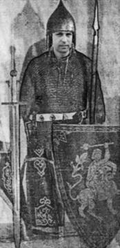 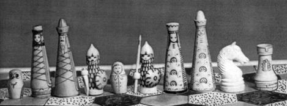 Русские шахматы Трубицына В. Эскизный проект для
гексагональной доски. Первая попытка переосмыслить названия шахматных фигур в
русской традиции. Богатыри - это офицеры (то есть слоны – но откуда у нас
слоны?), пешки – совы и матрёшки, Башни – это туры. Часть 1.
Исторический аспект названий История изначального появления и
распространения шахмат на Руси и в России до сих пор неполна. Она содержит в
себе немалое количество вопросов, на которые ни историческая наука, ни
лингвистика не в состоянии дать однозначные ответы. Совершенно не обусловленным
остается выбор современных названий шахматных фигур, в котором
случайно-иррациональное, восходя к имитации иноязычных говоров, преобладает над
рассудочно-логическим. Настоящая работа, посвященная
историко-фоносемантическому анализу названий российских шахматных фигур, не
ставит и не может ставить своей целью исчерпывающее освещение эволюции
названий, предлагая, главным образом, исторические и количественные
фоносемантические оценки с точки зрения нормы современного русского языка. Исторический экскурс За полторы тысячи лет своей
истории шахматы прошли через три качественно различных ступени: чатуранга -
шатранг - современные шахматы (15 – с. 16). В самом древнем варианте игры,
чатуранге, имитировалось военное сражение четырех боевых дружин, которое в
аллегорическом виде отражало частые междоусобные столкновения мелких царств
Древней Индии. В сражении применялись четыре рода войск: боевые слоны,
колесницы, конница и пехота. В составе дружин присутствовали также и их
предводители - раджи. Главные отличия шатранга состояли в том, что количество
соперников в игре уменьшилось до двух, а ходы производились без использования
игральных костей. В комплекте фигур появился военный советник. Шатранг возник в
5 - 6 веках в Азии, в силу этого большинство фигур получили названия на языках
народов, живших западнее Индии (28 – с. 1417). В 7 - 8 веках в
Арабском халифате шахматы получили дальнейшее развитие, игра стала называться
шатрандж, шахматные фигуры приобрели другую (абстрактную) форму. В это же время
шахматы появились в Средней Азии, сохраняя свой превоначальный архаический вид
(15 – с. 60). В книге о шатранге И.Орбели и К.Тревера (см. 17) довольно тонко
подмечена попытка осмысления шахматных фигур в пехлевийской
(среднеперсидской) рукописи
"Мадайан-й-Чатранг" (600 г): "…Фражин подобен начальнику
боевых колесниц, конь подобен начальнику конницы". По мнению авторитетного историка
российских шахмат Исаака Линдера шахматы появились на Руси, скорее всего,
Каспийско-Волжским торговым путем в 10 - 11 веках. Впервые эту гипотезу
высказал сибирский ученый и незаурядный шахматист И. Савенков (1846 – 1914
гг.), но он относил проникновение шахмат к 8 - 9 векам.
Многочисленные археологические находки склоняют чашу весов в пользу версии
И. Линдера (см. 14, 15), вместе с тем, не выводя ее как единственно
возможную. Однако вопрос генезиса русских названий фигур до сих пор остается неизученным.
По сути, предыдущие исследователи рассматривали только современные названия,
изредка сопровождая их минимальными ссылками на более ранние источники. Предмет
исследования Авторы считают необходимым
рассматривать возникновение и трансформации русских названий шахматных фигур в
сопоставительном аспекте (историческом и фоносемантическом), для чего, помимо
современного официального набора названий, привлечены два более ранних и один
разговорный. Всего анализируются четыре русских набора: древняя реконструкция
13 - 14 веков, средневековый набор 16 века, современные разговорный и
официальный наборы названий (столбцы 2, 3, 5, 6 в табл. 1). Кроме того, в
соответствии с двумя основными версиями проникновения шахмат в Россию (Восток -
Запад), в рассмотрение включены персидский и польский наборы названий (столбцы
1, 4 в табл. 1). Приведем комментарии ко всем шести наборам. Персидский набор Названия шахматных фигур в
русском произношении в основном
заимствованы из цитированной выше работы И. Линдера. Термины
персидского набора наиболее чужды русскому языку. Перед древнерусскими
племенами, по одной из версий получившими шахматы непосредственно с Востока,
должна была возникнуть дилемма: либо заимствовать восточные названия фигур -
либо трансформировать их в более понятные названия. Обоснованно можно
утверждать, что первое, скорее всего, оказалось неприемлемым из-за отсутствия в
сознании носителей древнерусского языка семантических соответствий с
фонетическими формами восточного набора (см. 18, 20). Древнерусская реконструкция Приводимая реконструкция впервые
выполнена авторами и, безусловно, нуждается в пояснениях. Основной посылкой
реконструкции было осознание первыми русскими игроками имитационного характера шахмат:
они являлись моделью боевого поединка двух дружин. В любые исторические эпохи
естественным для носителя языка является желание привязать имитацию к реалиям
своего времени. Как выглядела бы боевая дружина русичей, в том числе на
шахматной доске, в терминах той эпохи? Найдя ответ, можно воспроизвести
вероятные названия фигур, которые могли сложиться в речевой практике тех
времен. Обратимся к социокультурной среде, существовавшей в упомянутую эпоху (9 – 14 вв.). Из истории известно, что во
главе древнерусского войска, дружины, находился князь, олицетворяющий всю полноту военной и гражданской власти.
Именно этот термин означал почти монархического правителя в Древней Руси. Вторым лицом в княжестве был
военачальник - воевода. Он являлся не
только высшим военным должностным лицом, а мог представлять княжеские интересы
за пределами столицы, выполняя различные поручения князя при управлении
подвластными ему территориями. Известно, что в боевом строю
руководство сражением осуществлялось не только "большим воеводой": в
сражениях при отсутствии быстрой связи это физически невозможно. Поэтому войско
разбивалось на полки, которыми руководили простые воеводы и неформальные лидеры
- русские богатыри, витязи, то есть
сильные и храбрые воины княжеской дружины.
Само войско состояло из конных и пеших ратников. Вот что по этому поводу
сообщается в "Истории войн и военного искусства": "Русское войско применяло в
11 - 14 вв. боевые порядки, позволявшие осуществлять маневр и наращивать усилия
из глубины. Впереди боевого порядка располагался передовой полк, куда входили стрелки из луков. В центре находился
полк "чело", или большой полк, составленный
из пехоты. На флангах большого полка
выстраивались полки правой и левой руки -
смешанного состава или конные". (12 – с. 23, Ледовое побоище, 1242 г.). Не
исключалось также передвижение войска в кочевых кибитках - вежах. (Этот термин ещё означал и шатёр, и крепостную башню. Не
случайно, одно из ранних поселений на Нижнем Дону, имеющее белокаменную крепость,
называлось Белая Вежа. Это тот древнерусский город, через который шахматы, по
одной из версий, проникли на Русь в 10 - 11 веках. (15 – с. 68).
Указанные кибитки (вежи) применялись не только для передвижения, но и для
обороны. Например, широко известно применение "табора" -
своеобразного подвижного укрепления из двух рядов повозок, связанных цепями. Конные ратники - это конники, кавалеристы, являющиеся
грозной боевой силой всех армий вплоть до 20-го века. Отчего шахматная фигура,
изображающая конника, должна быть представлена только конем? На родине шахмат,
в Индии, и в Западной Европе в комплектах фигур были представлены именно всадники. Согласно (5 – с. 465)
"всадник" - более древний термин на Руси, чем "конник".
Вероятно, его могли выбрать жители Киевской Руси при вольном переводе названий
фигур с восточных языков. Что касается современной ладьи,
то с ее названием связаны совершенно невероятные метаморфозы, описанные И.
Линдером (14 – с. 45). Сегодня на месте этой фигуры мы видим крепостную башню,
в силу привычки называемую лодкой, что противоречит семантике названия.
Ратники, действительно, могли передвигаться и в ладьях. Именно так выглядят
ладьи из Гродно и Волковыска, датируемые 12-ым веком (15 – с. 74). Но не стоит
также исключать введение термина "башня" (“вежа” на языке Древней Руси) при первоначальном появлении шахмат на
Руси. Отметим, что в Польше с древнейших
времен используется именно это название.
Вместе с тем, именно в Западной Белоруссии, рядом с Польшей, найдена указанная
ладья с воинами (не свойственная Польше и Западной Европе в целом), что
косвенно подтверждает версию о проникновении шахмат на Русь с Востока. Хотя,
разумеется, более поздняя шахматная культура, скорее, шла из средневековой
Западной Европы. Пешие ратники, принимавшие на
себя всю тяжесть сражения, получили правильные аналоги во всех шахматных
комплектах (в Древней Руси пеший воин - п 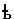 Адекватный набор древнерусских
названий шахматных фигур мог содержать такие названия: князь, воевода, витязь,
всадник, вежа, пешьц. Обоснуем это
предположение. 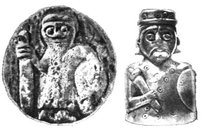 Справа –
фигурка Короля. Берестье, конец XII века. Кость 4,6 см. Брестский
краеведческий музей. Князь Главная шахматная фигура в
начале прошлого тысячелетия на Руси могла называться двумя адекватными по
смысловой содержательности терминами: князь
или царь. Оба термина широко
известны на Руси с 5 - 6 веков, но второй относился только к чужеземным
правителям. В качестве российского верховного правителя термин "царь"
утвердился после распада Византии и свержения татаро-монгольского ига. Иван III впервые обозначил себя царем в 1474 году при
подписании мирного договора с Ливонией, но официально принял царский титул
только его сын Иван Грозный (16 января 1547 г.). Однако для шахматной истории
этот факт не имеет большого значения: в восточной экзотической игре главная
фигура при переводе на древнерусский язык могла быть названа столь же
экзотическим, но более понятным, чем термин "шах", словом
"царь". Вероятно, это оформилось к 16-му веку. Вместе с тем, в начале
прошлого тысячелетия термин "князь" мог оказаться более
предпочтительным. В чем, кстати, был абсолютно уверен И. Савенков. Гораздо позже, в 19-ом веке,
между известными российскими шахматистами шла полемика об окончательном
названии главной шахматной фигуры. Один из сильнейших шахматистов России
И. Шумов (1819 – 1881 гг.) горячо ратовал за термин "царь", уже
прижившийся в игровой практике. Но победу одержал ориентированный на
европейскую культуру шахматист и шахматный теоретик А. Петров (1794 – 1867
гг.), который в своем фундаментальном труде о шахматах
(Шахматная игра, приведенная в систематический порядок, с присовокуплением игор
Филидора и примечаний на оные. СПб, 1824) окончательно утвердил
западноевропейское название "король". Этимология названия фигуры
выглядит следующим образом:
Рис. 1. Историческая трансформация названия шахматной фигуры «король». В современной русской шахматной лексике слово "шах" все же
осталось: морфологически, как составная часть названии игры (шахматы: “шах - мат”, в
переводе с персидского означает “король умер”), а также терминологически, как
форма объявления атаки на короля: “шах!”. Удостоверимся, что в языке 13-14
веков существовали и были распространены используемые в реконструкции термины.
Анализ по словарям древнерусского языка подтверждает это, но даже отсутствие
абсолютно точных текстовых источников вовсе не является решающим
доказательством. Причин две. Обсуждаемая эпоха была временем возникновения и становления славянской письменности, поэтому количество
сохранившихся письменных памятников весьма ограничено. Кроме того, церковь
причисляла шахматы к азартным играм, например, в Италии с 1061 г., во Франции -
с 1254 г. В Византии запрет был осуществлен в 12-ом веке, в результате чего
постановления Вселенского собора в Вальсамоне, принятые при непосредственном
участии монаха Зонары, перекочевали в "Кормчие книги" - так
назывались переведенные на русский язык и подвергшиеся переработке "Номоканоны".
Лишь в конце 14-го века Регенсбургский католический собор снял запрет с шахмат,
чему не спешило следовать более консервативное православное духовенство: даже в 16 веке шахматы на Руси все
еще были под запретом. Вместе с пением, танцами и музыкой шахматы сурово
осуждались в соответствии с предписаниями "Домостроя" протопопа
Сильвестра (ок. 1550 г.): "Прямо все вкупе будут во аде, и зле
прокляты". Это объясняет почти полное отсутствие упоминаний о шахматах в
письменных памятниках Руси вплоть до 16-го
века. Источники дают следующее. Шах - (перс.) титул монарха в некоторых странах
Ближнего и Среднего Востока - и Делийском султанате. Впервые стал употребляться
в государстве Сасанидов (22 - с. 1518). Князь (кънязь) -
1. глава, старейшина; владыка… (Служебные минеи за сентябрь, октябрь и ноябрь.
В церковнославянском переводе по русским рукописям 1095 – 1097 гг. Изд. ОРЯС
АН, СПб, 1886 (Памятники
древнерусского языка, вып. 1), с. 267 – 512.
2. господин, хозяин, владелец (Попов А. Книга бытиа небеси и земли.
Палея историческая с приложением сокращенной Палеи русской редакции - 4 т.
ОИДР, 1881, кн. 1) с. 1 - 172. 3. правитель княжества (удела,
земли)… государь, монархический правитель в Древней Руси и в зарубежных государствах (Правда Русская, 1.
Тексты. Под ред. Б. Д. Грекова. М. – Л., 1940.). 4. лицо, имеющее титул князя (24 - вып.
7, с. 207). Князь
- 1) вождь племени, с развитием феодализма - правитель государства. На Руси
старший из князей назывался великим
князем, остальные - удельными
князьями. 2) почетный наследственный
дворянский титул - с 18 века жаловался царем за особые заслуги (24 - с.600). Царь - государь,
монарх, верховный правитель земли, народа или государства (9 - т. 4, с. 587). Царь - (от
латинского ceasar - цезарь) -
в России в 1547-1721 годах официальный титул главы государства. При Петре I заменен титулом "император", но наравне с ним неофициально
существовал до свержения самодержавия в 1917 году (22 - с. 1478). Примечание. И. Улуханов (27 - с. 9)
пишет: "Сложившись на южнославянской основе, старославянский язык имел
очень много слов (и среди них наиболее употребительных, таких как земля, вода, домъ. князь, богъ и т.д.) общих с древнерусским языком". Но Л. Якубинский
(29 - с. 56) уточняет, что слово "князь" не является исконно
славянским словом, оно представляет собой усвоенное славянами германское слово
с основой "kuning",
которое имело первоначальное значение "родовой или племенной
старшина", а позже - "король" (см. также англ. "king" - король, древне-скандинавск. "koningr"- князь). Отметим также два следующих факта. Первое. История русских князей
начинается с середины 9-го века.
Следовательно, термин “князь” не был чем-то необычным в разговорной
практике. Второе. В 1821 году в
учебнике для начинающих шахматистов Ивана Бутримова главная шахматная фигура
называлась царём. 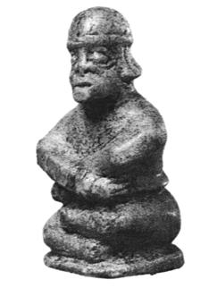 Ферзь.
Лукомоль. XII век. Кость. Инст. Истории Беларуси. Воевода И. Линдер указывает:
"…Славянам Киевской Руси трудно было осмыслить существование рядом с цесарем (царем) почти равной по
рангу, а в то время и по силе, фигуры ферзя (вспомним, что в шатранге она еще
не имела права движения по всей доске). У русского князя в мирных и военных
делах не было могущественных советников или главнокомандующих, подобных,
например, персидским, а позднее арабским визирям. Поэтому-то восточный термин и
остался в данном случае без перевода и без изменений был перенесен на русскую
почву". (14 – с. 43). С этим трудно согласиться по нескольким причинам. Широко известная в Древней Руси
"Повесть временных лет" является энциклопедией жизни 9 - 11 столетий
(см. 2). В ней читаем: "В лето 973. Начал княжить в Киеве Ярополк, а
воевода его был Свенельд". Далее: "… И пошел Владимир на Ярополка,
брата своего, и пришел в Киев с большим войском, а Ярополк не смог выйти ему
навстречу и затворился в Киеве со своими людьми и с воеводой Блудом". И
еще: "… И стал воевода Святополка,
разъезжая по берегу, насмехаться над новгородцам". Затем: "Тогда люди
стали ругать воеводу Коснячка…". И еще: "… На войну выйдя, не
ленитесь, не надейтесь на воевод". А вот фраза из Аврамия Палицына,
русского политического деятеля и писателя конца 16-го - начала 17-го века:
"И посла князь Михаил …воевод…за Волгу на перевоз к Николе
чюдотворцу…" Упоминается воевода и в "Сказании о святых Борисе и
Глебе". (Сильвестровский список 14-го века. Изд. И. Срезневского,
СПб, 1860). Из приведенных примеров явствует, что у древнерусских князей были советники
в мирных и военных делах. В "Истории древнерусского
языка" (29 - с. 56) Л. П. Якубинский сообщает, что термин
"воевода" является общеславянским. При этом он не всегда относился ко
второму лицу в системе родовой власти, так как воеводы зачастую узурпировали
функции глав племен и племенных князей. Автор упомянутой выше книги пишет: "В Киевской Руси права
верховного начальника принадлежали великому князю, но при нем, как второе лицо
с военными функциями, стоит воевода; так, при Игоре был воевода Свенельд, при
Святославе упоминается воевода Претич, при Ярополке - воевода Блуд, при
Ярославе - воевода Буды; упоминается воевода и при Святополке. Впоследствии
слово воевода получает в русском
языке и другие значения. В древнерусском языке с наибольшей сохранностью, хотя
и с совершенно преобразованными в процессе развития государства функциями,
выступает "старинная" пара родового строя: князь - родовой старшина,
и воевода - родовой военачальник".
Источники дают следующее. Ферзь - ж., но правильнее мжск.
- старшая по царе шахматная шашка; с прсдск.
искжн. (9 - т. 4, с. 549). Ферязь, ферезь
- 1.ж. или ферязи мн. стар. - мужское долгое платье с
длинными рукавами без воротника и перехвата.
2. женское
платье, застегнутое донизу (сарафан?). 3. в
Новгородской, Тверской, Ярославской губерниях - и поныне праздничный сарафан. 4.
мещанский, городской сарафан с лифом без пуговиц, нарядный (9 -
т.4, с. 549). Ферзь - термин
"ферзь" восточного происхождения (турецкое «ferz», от персидского "ферз" - полководец) - (28
– с. 1254). Воевода - 1.
предводитель войска, военачальник, старший в войске.
2. старший градоначальник, губернатор (9 - т. 1, с. 235). Воевода -
1. воевода, военачальник (Новгородская четвертая летопись, вып. 1 - 3, Полное собрание русских летописей, т. 4, ч. 1, Л., 1925).
2. большой воевода - главное военное должностное лицо в войске.
3. лицо, представляющее высшую - чаще военную - власть на местах
("Сказания о святых Борисе и Глебе". Сильвестровский список 14 в.
Изд. И. Срезневского, СПб, 1860) - (24 -
М., 1975, вып. 2, с. 261). Воевода - (от древнерусского ‘вои’ - войско, сила и
‘вода’ - ведущий) военачальник, правитель у славянских народов.
1. на Руси известен с 10-го века, с конца 15-го века воеводы командовали
основными полками русского войска (большим, передовым и т. д.) а также возглавляли конницу, артиллерию,
гуляй-город и отряды нерусских народов. Упразднены в начале 18-го века. Были
также воеводы городов (середина 16-го века - 1775 г.), провинций (1719-1775
гг.).
2. в Польше и Литве (в 12-18 вв.)
- королевский наместник, начальник гражданской администрации и ополчения воеводства (6 - т.
1, с. 291). Воевода -
военачальник
"…тоу бе съшьлося… и князи и вьсе болярьство и вьсе старшинство, и
воеводы вься роусьскы земле…". Сказание о Борисе и Глебе, приписываемое
мниху Якову (восходящее к 9 веку) по списку "Успенского сборника"
12-го века, л. 8б - 26а. Изд.:
"Сборник 12-го века Московского Успенского собора", вып. 1. Под ред.
А. Шахматова и П. Лаврова. - Чт. ОИДР, 1899, кн. 2, с. 12 - 40 (23 - т. 1, с.
457). Воевода -
военачальник, правитель у славянских народов. На Руси известен с 10 века. В
Российском государстве - глава полка, отряда (с конца 15 - до нач.18 века)
города (с середины 16 в. - по 1775 г.), провинции (1719-1775гг.) - (24 –
с. 237). Примечание. Адаптация названий шахматных
фигур к российской речевой практике происходила совершенно стихийно, на уровне
общения игроков. Вплоть до выхода в свет в Петербурге (1821-1824 гг.) первых
книг о шахматах И. Бутримова и А. Петрова не было попыток положить
начало исследованию этого культурного феномена на территории России. Тем более,
заняться осмыслением названий шахматных фигур и вопросом их происхождения.
Результатом стал живописный конгломерат. Из-за
многовековой адаптации заморской игры к культурам различных стран невозможно
единообразие в окончательном варианте названий шахматных фигур. Например, в
Западной Европе ферзя назвали королевой. Наше объяснение отсутствию ее в
русском средневековом наборе состоит в следующем. Восточная
граница русских княжеств в 12-м веке проходила по линии Рязань – Харьков, что
означает присутствие шахмат на территории нынешней России, но не в государстве Россия,
которого тогда на этих территориях не было: юг Украины и России от Одессы до Волги были заняты половцами, а устье Камы - волжскими
болгарами. Тогда становится ясным: если юг России и Поволжье были Азией, то
населявшие их племена не испытывали
необходимости переводить названия
шахматных фигур на русский язык. Что и отразилось в названии ферзя. Лишь во
второй половине 16-го века Нижний Дон и Поволжье, вплоть до Астрахани, были
присоединены к Русскому государству. Поэтому там и не использовался
семантически адекватный и понятный термин "воевода". Вместо него возник таинственный ферзь - да так и остался. Даже в 19-м
веке россияне были не в состоянии определить, к какому роду относится это
слово. То ли оно означало восточного мудреца или визиря, то ли супругу короля.
Для устранения проблемы В. Даль 120 лет
назад “указал” считать слово "ферзь" мужского рода, чтобы, как шутили,
“обозначить” наличие русских штанов под его восточным халатом. Но стоит ли
трепетать перед неудачным с точки зрения русского языка примером русификации,
даже если он вошел в историю в виде лингвистического казуса? С
осмыслением термина «слон» произошла другая история. Русичи оставили в комплекте фигур слона, но перевели
его восточное название на русский язык.
И хотя эта фигура по смыслу слова плохо вписывалась в строй русской дружины,
как экзотический элемент игры, заимствованной с Востока, она получила право на
существование в русском языке. В итоге часть названий фигур шахматного
комплекта в русском языке сохраняет свои восточные корни, от чего изначально
отказалась Западная Европа. В связи с
этим можно вспомнить блоковское, касающееся всех нас: "Да, скифы - мы! Да, азиаты - мы!…". 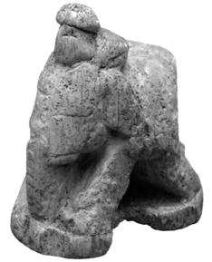 Слон. Саркел – Белая вежа. Нижний Дон. IX – X век. Слоновая кость 4,4 см. Эрмитаж, СПб. Витязь Обсудив
возможные названия двух главных шахматных фигур, обратимся к оставшимся. Четыре
из шести сильных фигур представлены не воинами, а животными, которые в силу
природного естества не могут без наездника-воина участвовать в боевых
действиях. Если следовать логике моделируемого в шахматах сражения, то на месте
животных в боевом строю должны были бы стоять
самые сильные воины, в том числе наездники, витязи (былинные русские богатыри) и всадники, образующие ударную силу древнего войска - конную рать.
Термин "витязь" уходит корнями в древнеславянский язык. Нет
сомнения в том, что шахматный термин "слон" не более чем дань
восточной экзотике. В русской воинской дружине он смотрится чересчур
фантастично. На распространение восточного термина, скорее всего, подействовало
влияние Востока, культурное пространство которого и сегодня простирается в
нашей евроазиатской стране до Поволжья, Калмыкии и отрогов Кавказа. Факт, что шахматные
фигуры, изображающие слонов, были найдены на раскопах и в Самарканде
(датированы 7-8 вв.), и на Нижнем Дону в древнерусском городе Белая Вежа, который
возник на месте хазарской крепости Саркел после взятия ее киевским князем
Святославом (965 г.). Например, фигура
слона, найденная М. Артамоновым в
Белой Веже, датируется 9-10 вв. Все находки вехами отмечают возможные пути
проникновения шахмат на Киевскую Русь и в Великий Новгород. Источники дают следующее. Слон - термин
"слон" индийского происхождения, сохранился только в русском языке (28 – с. 1066). Слон - "… А бои ихъ все слоны…; а к
слономъ вяжуть къ рылу да къ зубом великiя мечи по кентарю кованы, да оболочать ихъ въ доспехъ булатныи, да на нихъ
учинены городкы, да в городе по 12 человек въ доспесехъ, да все съ пушками, да
стрелами". Афанасий Никитин. Хождение за три моря в 1466 - 1472 гг. - по
Троицкому списку 16-го века. Полное собрание русских летописей, т. 4, с. 330 (25
- т. 3, ч. 1, с. 423). Багатур (монг.) - буквально "тот, в ком
живет бог"; неофициальное наименование степных богатырей (8 - 312). Богатырь (багатур) -
1. начальник войска, воевода (у восточных народов), 1240. (Ипатьевская летопись
- Полное собрание русских летописей, т. 2, изд. 2, СПб, 1908г,
(воспроизведение текста издания 1908 г. - М., 1962), список 15 века. 2. храбрый
воин, витязь, (24 - М., 1975, вып. 1, с. 259). Богатырь - м. татр.: человек рослый, дородный,
дюжий и видный; необычный силач; смелый и удачливый, храбрый и счастливый воин,
витязь (9 - т. 1, с. 104). Витязь - м. храбрый и удатливый воин, доблестнй
ратник, герой, воитель, рыцарь, богатырь (9 - т. 1, с. 211). Витязь,
витезь - воин из дружины князя или охраны короля "… Латына
бестудiе въземше w
худыхъ Римлянъ, а не w
витязеи". (Летописец Переяславля
Суздальского, составленный в начале 13-го века). Издание М. Оболенского,
М., 1851, список 15-го века. "И баху пленили Гречестiи витези…" Хронограф 16-го века в Моск. публ. музея № 454 в копии,
сделанной для графа Н. П. Румянцева - см. Рум. с. 734-753 (25 - т. 1. ч. 1,
с.265). "… Кои ранен спереди, тому честь велию даваше и витязем его
учиняше". (Сказание о Дракуле воеводе - Рукоп. ГПБ, Кирилло - Белозерск. №
11/1088, 1490 г. См. также: Лурье Я. С. Повесть о Дракуле, М. – Л., 1964 г., с.
117 – 122). Витязь - в Древней
Руси - отважный, доблестный воин, богатырь (22 - с.230). 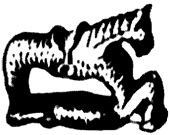 Всадник Как в любом
другом войске, в древнерусской дружине существовало деление на конную и пешую
рать. Понятно, что единицей конной рати является конный воин, а не конь без
седока. Поэтому вполне логично было бы назвать аналогичную шахматную фигуру
всадником или конником, что, в сущности, произошло в Западной Европе. Об этом
пишет И. Линдер: "Конница … всюду - в Индии, на Среднем и Ближнем Востоке,
в Восточной и Западной Европе - была в средние века одним из важнейших родов
войска. Поэтому во всех странах, с тех пор как там появились шахматы, в
комплект игры входила фигура, именовавшаяся конем или всадником. В шатранге
первоначально сохранились индийские всадники, о чем свидетельствуют находки
изобразительных шахмат в Средней Азии (Афрасиаб и Хульбук). Это - фигуры массивных коней с восседающими на
них в полном облачении воинами. Однако в переводе осталось лишь
символическое указание на этот род войск в виде названий "асп"
(таджико-персидский) "от", "ат" (узбекский, туркменский)
"фарас" (арабский), что означает "конь" (конец цитаты)
". Следовательно, перевод термина
«всадник» оказался неточным! Тем не
менее, И. Линдер почему-то резюмирует: "Этот термин упрочился и
сохранился до сегодняшнего дня". Где же?
Опровержение можно найти в том же тексте: "… Когда же арабы
познакомили с игрой Западную Европу, здесь в скором времени снова появились
всадники - и не только в изобразительных комплектах фигур, но и в терминологии.
Таковы названия caballero
(испанский), cavallo
(итальянский), cavalier
(французский), knight
(английский), jezdec (чешский), что означало "всадник",
"конный рыцарь". Более вольный перевод дали немцы, поляки, сербы:
"прыгун", "скакун". Следует
признать, что многие западноевропейцы лучше нас поняли суть шахматного театра,
совершенно определенно введя такие термины как башня и всадник. Можно
согласиться с И. Линдером в том, что слово "конь" - древнее,
общеславянское, часто встречающееся в былинном эпосе, в ранних письменных
источниках, включая "Русскую Правду". Но в русском языке бытовали
также иные слова: конник, всадник. Фигуры
шахматных всадников "доскакали" из Индии до Самарканда – их
изображения приведены в работе И. Линдера (15 – с. 59). Следует добавить, что в
книге В. Виноградова (5 – с. 465), где собраны малоизвестные материалы
исследований, есть ссылка на мемуары И. Дмитриева "Взгляд на мою жизнь",
в которых слово "всадник" определено как более раннее по отношению к
"коннику". Это подтверждает правильность выбранного нами термина для
реконструкции древнерусского названия шахматного коня. Источники дают следующее. Всадник - тот, кто
едет верхом (16 - с. 96). Всадник - 1.
Всадник "Дуксъ Констянтинъ уведав, яко мятежь многъ бывъ, и коня погна, конь
же по мосту каменну поползувся, на землю всадника съверже". Хрон. Г.
Амарт., 543, список 15 в. восходящий к
11 в. 2. Тот, кто совершает поездку на
корабле как пассажир (24 - вып. 3, с. 115). Всадник -
"Колесница и всадници", Книга Исхода по рукописи Троицко-Сергиевой
лавры 14-го века (См. И. Срезневский. "Сведения и заметки о малоизвестных
и неизвестных памятниках" в 4-ех томах - СПб, 1867 - 1880 гг.), "Корабльници и въсадьници",
Патерик Синайский 11-ый век, Московская синодальная библиотека (25 - т. 1, ч.
1, с. 402). Всадник - м. конный, конник, наездник, верховой, вершник (9
– т. 1, с. 267). Кавалерист - конный
воин, конник, вершний ратник (9 - т. 2, с. 70). Конь - в
шахматной игре шашка, вырезанная конем (9 –
т. 2, с. 156). Примечание.
Термин «шашка» расценивается авторами как нонсенс, постоянно
используемый Д. Саргиным, без необходимости смешавшим столь разные сейчас игры
«шашки» и «шахматы». Возможно, в те времена смысловая содержательность названий
была более близка, что снимает какие-либо претензии в адрес носителей языка. Конник - конный
ратник: "… Ополчихся на Асию с силой пешею и конники, и в лодиях и насадехъ
и со слоны". Книга глаголемая Козмы Индикоплова, СПб, 1886 (Изд. ОЛДП,
86), список 16 в. Конник - всадник,
конный: "Конникъ седмдесятъ". Деяния святых апостолов, писанные
святым апостолом и евангелистом Лукою (по нескольким спискам). "Падетъ
конник вспять". Книга Бытия. "Видевь кони i коньники". Книга Второзакония. "… Инде пеши, а инде
конникы". Летопись по Лаврентьевскому списку. Издание Археологической
комиссии, СПб, 1872. "Сам поиде съ коньникы по них". Новгородская
летопись по Синодальному списку, 1875 г. (25 - т. 1, ч. 2, с. 1272). Конник - конный
воин, кавалерист (16 - с. 266). 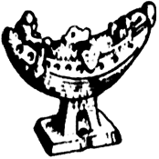 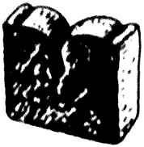 Ладья. Камень. Гродно. XII век. Ладья. XIII век. Вежа Самой
распространенной версией происхождения названия ладьи является следующая.
Индийская ратха (колесница) не существовала у народов, живших западнее Индии. В
шахматной фигуре-колеснице они увидели крылья птицы. Так появилась волшебная
птица Рух, обладающая необычайной силой и способностью помогать борьбе с
врагами в самых трудных ситуациях. В
свою очередь, русичи в непонятной для них птице увидели сходство с
лодкой. Это название и прижилось на Руси, но под влиянием западноевропейской
культуры фигура ладьи приняла форму крепостной башни, что в древнерусском языке
соответствует термину "вежа",
имеющему больший объем понятия. В
современном наборе фигур башню и следовало бы называть башней. Если нет лодки,
зачем "ладья"? Поразительное объяснение русскому термину
"ладья" дает В. Даль: "В шахматной игре - тура, башня…". Исследователь
русского языка еще тогда видел, что дважды ошибочная модификация названия
безнадежно устарела. Источники дают следующее. Ладья - шахматная
фигура; фигура "рух" (из шатранджа) напоминала по форме лодку,
вероятно, поэтому восточные славяне называли ее ладьей. В Западной Европе
получила название "башня" (исп. и итал. "torre", нем. "turm") - (28 – с. 554). Лодья =
лодия - ладья, лодка,
судно "(Олег) похорони вои въ лодьяхъ", Повесть временных лет 6390 г
(по Ипатьевскому списку), 1871 г. Издание Археологической комиссии, СПб,
фотолитография (25 - т. 2, ч. 1, с. 42). Ладья - в
шахматной игре: тура, башня, угольная шашка, которая ходит во всю доску, прямо
(9 - т. 2, с. 237). Тура - ж. фрн.
башня в шахматной игре (9 - т. 4, с. 456). Башня - ж. вежа, запд. батура, ряз.
костер, стар. каланча, вышка;
высокое, сравнительно с шириною, здание разного вида; колокольни, подзорные или
наблюдательные здания, телеграфные или маяки…
(9 - т. 1, с. 57). Вежа - 1. ж.стар.
намет, шатер, палатка, кочевой шалаш, юрта, кибитка. 2. башня, каланча.
3. арх. лопарский шалаш,
сложенный остроконечно из жердей и покрытый хворостом, мохом и дерном, чем и
отличается от крытых шкурами и берестою чума и юрты.
4. кур. вежка, полевой шалаш.
балаган, сторожка. 5. нвг.
межа, грань, рубеж. 6. стар.
устройство для рыбной ловли (9 - т. 1, с. 177). Вежа - 1. легкая
жилая постройка, кочевая кибитка, палатка, шатер (1319 г., Софийская 1
Летопись, 214). "И за поле Куликово по Мечу реку, на онои же стране реки
тоя тако же мнози срацыни, половцы живяху, в вежах своих качюющи".
(Казанская летопись, 114). 2. стан, кочевье (1187 г.). "Половци
бо бяхуть шли в Дунаи и не бе их дома в вежах своих" (Ипатьевская летопись
- Полное собрание русских летописей, т. 2, Изд. 2, СПб, 1908, воспроизведено:
М., 1962), список 15 в. «"Стати вежами, стать станом" - расположить кибитки на кочевье». (24 - вып. 2, с. 50). Вежа - шатер,
юрта, разборное переносное жилище степняков (8 - 312). Вежа
- шатер, кибитка; вежи - стан. "Оугри… пришедъше къ Днепру и сташа
вежами", Повесть временных лет, 6406 г. "Чернии Клобуци побегоша къ
своимъ вежамъ", Ипатьевская летопись, 6658 г. "Вежа же среде города
высока, якоже бити с нея окрестъ града, подездана каменьемь въ высоту 15
лакотъ, создана же сама древомъ тесаннымъ и убелена, яко сыръ",
Ипатьевская летопись, 6767 г. - вежа у поляков, чехов, словаков - башня,
каланча (25 - т.1, ч.1, с. 482). Вежа - (др. русск.) шатер, кибитка, башня (22 -
с. 203). 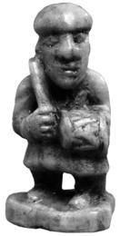 Пешка. Волковыск, XII век. Пешьц Множество
версий происхождения термина
"пешка" излагает И. Линдер (14 – с. 36), включая версии В. Даля
и Д. Саргина. В целом же можно согласиться с позицией И.Линдера в этом вопросе.
Он пишет: "Уже первое знакомство с
источниками показывает, что характерной чертой в военном деле и в быту древних
славян является противопоставление пешего и конного". Суздальская и
Лаврентьевская летописи гласят: "… Хто хощет пешь, а хто хощет на
конех", "… Володимирко же раставлял бяше дружину свою на бродех, инде пеши, а инде конникы". Далее, привлекая дополнительные цитаты И.
Срезневского, И. Линдер делает вывод: "Отсюда можно заключить, что
термину "пешка" предшествовал тот же по смыслу, но более ранний по
форме - "пешьци". В былинах встречается такое выражение: "Играть
в пешецки, во шахматы" (14 – с. 37). По В. В.
Виноградову (5 - с. 464) в древнерусском языке для обозначения пехотинцев употреблялись термины "пешьцъ"
(пешьци - пешее войско) и реже - "пешеходьць". Например, в Псковской
1 летописи (1323 г.): "Немци стоятъ на Завеличьи, и оставивше пешьцевъ за
полем, а Остафеи князь, с коневники поехавъ, удари на нихъ". Другие источники дают следующее. Пеший - 1. пешая
рать, пешая сила, пеший строй - пешее войско. "… А единой колеснице служат
сто тысящ конное рати, а сто тысящ пешия рати".
(Истрин В. М. Сказание об Индейском царстве. - Древности. Труды
Славянской комиссии Московского археологического общества, т. 1, 1895, с. 71 -
73, список 15-го века). "… И того пешего строю солдатъ и стрельцов 5221
чел." (Материалы для истории колонизации и быта степной окраины Московского государства (Харьковской и
отчасти Курской и Воронежской губерний)
в 16 – 18 столетиях, собранные в разных архивах и редактированные Д. И.
Багалеем, Харьков, 1886). 2. тот, кто ходит пешком. 3. безлошадный (24 - М., 1989, вып. 15, с. 41). Пшьцъ - пеший воин. "… Бяше же их
триста и двадцать тысяч пшьцъ".
(Сл. Меф. Пат. П. отреч. 2, 230 - 15 в.). "И бысть сеча зла…Изяславу же
стоящю в пешцих (вар. 15 в.: пешьцехъ)" - (Лаврентьевская летопись, вып.
1- 3, Полное собрание русских летописей, т. 1, Изд. 2, Л., 1926 - 1928
(воспроизведено: М., 1962), список 1377 г. Пехота - м. пешее войско, инфатерия -
противопоставлена коннице. Пешка - рядовая,
простая шашка, шахматочная пехота (9 - т. 3, с. 573). Ратник - см. В. М.
Истрин. Сказание об Индейском царстве. - Древности. Труды Славянской комиссии
Московского арх. общ., т. 1, 1895 г., с. 71 - 73. список 15 в. 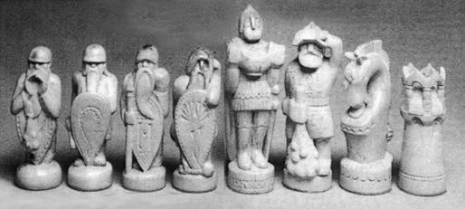 Шахматы «Перед битвой». Белые фигуры. Собственность
автора В. Ласунского.
Москва, 1976 г. Обоснование
реконструкции древнерусских названий шахматных фигур, соответствующих строю
древнерусской дружины, завершено. Нельзя
не удержаться от ремарки, вызванной ее очевидными логикой и семантикой. С
сожалением следует признать, что в современной шахматной "дружине",
кроме героической русской пехоты, воевать за Русь некому. Действительно, во
главе войска стоит король польских кровей, рядом с ним пророк с Востока в
непонятном одеянии, вокруг - стадо животных: слонов и коней, а на флангах
плывут посуху две пустых лодки, которые неизвестным визажистом превращены в
крепостные башни. Подобного рода семантические нестыковки противоречат здравому
смыслу, издавна присущему русскому народу, которому также была свойственна здоровая воинственность.
Показательна в этом плане история происхождения названий шахматных фигур
у такого невоинственного народа, как эскимосы. Фигуры короля и ферзя осмыслены в образе супружеской пары, кони
заменены миниатюрными лодками, ладьи - снежными хижинами, пешки - тюленями.
Охотники-эскимосы, видимо, даже не предполагали, что якобы более цивилизованные
народы не в состоянии прожить без войны ни одного дня. Русский средневековый набор 16-го века Этот набор
отражает процесс стихийной адаптации шахмат на историческом пространстве
России. При определении названия главной шахматной фигуры предпочтение было
отдано византийскому слову “царь”, к тому времени уже утвердившемуся в качестве
официального титула российского монарха. Второй термин “ферзь” был без перевода
заимствован с востока, как распространенное среди многих народов Центральной
Азии, Персии, Арабского халифата, Закавказья, Северного Кавказа, Нижнего Дона и
Поволжья представление о второй по
значению шахматной фигуре. Но абсолютно непонятная волшебная птица Рух, существующая в
персидском наборе шахмат, уже никак не могла остаться на шахматной доске.
Вместо нее появилось чисто русское изобретение – лодья. Названия двух следующих
фигур (слона и коня) были просто переведены на русский язык. А более древнее
название самой слабой фигуры (пшьцъ),
повидимому, приобрело более благозвучную форму: «пешец».
Получившийся конгломерат шахматных фигур вовсе не соответствует строю
русской воинской дружины, прежде всего, из-за присутствия ферзя и слона.
Парадокс состоит в том, что именно этот, на наш взгляд, во всех отношениях неудачный набор почти без
изменений лег в основу современных названий фигур. “Царь” был переименован в “короля”, “пшьци” стали
“пешками”, а смешение языков и эпох стало невообразимым: современный набор в
виде отголосков включает в себя элементы индийского, персидского, польского и
русского средневекового языков. Польский набор Названия
шахматных фигур также заимствованы из цитированной выше работы И. Линдера.
Этот набор вполне адаптирован к своей национальной культуре. Ладья в нем имеет
название, совпадающее с древнерусской реконструкцией, что восходит к общим
славянским корням языков. Скорее всего, именно под влиянием польского набора
произошла трансформация русской шахматной фигуры «царя» в европейского
«короля». Официальный автор переименования, сильнейший шахматист, крупный государственный
чиновник и один из первых серьезных популяризаторов шахмат А. Петров последние
годы своей жизни провел в Польше,
которая в те времена находилась под протекторатом России, что, собственно, и
могло подвести его к подобной шахматной новации. Русский разговорный набор В последней
трети прошлого тысячелетия активизировалось взаимопроникновение шахматных культур России и стран Европы. В
обиходе появляются новые названия шахматных фигур, которые становятся
общеупотребительными наравне со средневековыми русскими названиями. Например,
появились такие названия как «король» и «королева», образовавшие пару фигур на западноевропейский
манер. У болгар был заимствован «офицер», то есть более понятный термин для обозначения
военачальника вместо экзотического слона. Следует также упомянуть, что авторы
первых основательных российских книг о шахматах И. Бутримов и А. Петров все
шахматные фигуры первой горизонтали
называли «офицерами». Странная «ладья» в виде крепостной башни все чаще
(даже в словарях) стала называться на европейский манер «турой». Стихийная
эволюция названий фигур продолжалась в сторону нормы речевой практики,
осознаваемой шахматными игроками. Получившиеся названия до сих пор широко
используются любителями шахматной игры Между
прочим, стихия языка вовсе не нуждается в логическом обосновании. Например,
многим привычен термин "пешка", однако никто не задумывается: почему
"пешка", по смыслу игры пехотинец, в русском языке имеет женский род?
Что за странные амазонки составляют половину нашего шахматного войска?
Древнейшее название "пешьц" было куда более логичным!
Показательно звучат названия шахматных фигур в книге И. Бутримова
(1821 г.): "Царь или Король…Ферзь или Королева… Две Ладьи, называемые
также Башнями". Здесь И. Бутримов точно отразил мощное влияние
западноевропейской шахматной культуры на российскую евроазиатскую традицию. Русский современный набор Названия
данного набора, по многим параметрам не оптимальные в свете проведенного выше
рассмотрения, не нуждаются в пояснениях, так как официально закреплены в
современном русском языке и повсеместно используются в шахматной литературе.
Популярность шахмат в России огромна, что обеспечивает распространенность
названий этого набора среди всех любителей шахмат, обращающихся к специальной
шахматной литературе. Часть 2.
Фоносемантический аспект
Наборы названий шахматных фигур, относящиеся к различным языкам и
историческим периодам, были представлены в транскрибированном (звукобуквенном)
звучании русского языка, чтобы проанализировать их восприятие современными
носителями языка. Авторы не могут претендовать на знание и оценку восприятия,
существовавшего сотни лет назад - тем более, у носителей других языков.
Фоносемантический анализ проводился на основе оценивания структурной
неординарности названий в формализме частотной информативности (см.
Приложение). Результаты расчетов сведены
в табл. 1, в которой каждое название снабжено ударением, что необходимо в
частотной модели. Частотные информативности указаны под названиями фигур, также
приведены средние частотные информативности (),
дисперсии (s) наборов и их индивидуальные
мотивировочные факторы (М). Табл.1. Частотные характеристики наборов названий.
Структурная неординарность наборов По среднему значению частотной информативности
ближе всего к норме (2,69) оказались реконструкция (2) и русский разговорный
набор (5). Другие наборы сдвинуты в область большей неординарности, причем
персидский набор (1) выходит за границы области нормальной дисперсии, что
напрямую соотносится с его иноязычной природой. Повышенную фонетическую
выразительность наборов (3), (4) и (6) следует отнести к субъективной
значимости игры для игроков в шахматы, которые спроецировали свое отношение на
выбор фонетически неординарных названий фигур. Король, основная игровая фигура,
наиболее выразительно представлен в персидском (1) и русском средневековом (3)
наборах. Близость к норме реконструкции
(2) и русского разговорного (4) наборов, по-видимому, следует искать в
секундарной номинации шахматных фигур через речевую практику игроков:
произведенное ими лексическое смещение смысла слов, существовавших на момент
выбора названий, в сторону обозначения шахматных фигур оказалось интуитивно
привязанным к звуковым формам наборов в целом. Близость к норме объясняет
бытующую распространенность русского разговорного набора. При сравнении современного
набора (6) с разговорным (5) видно, что вместо «слона» (2,92) использован
«офицер» (1,25), вместо «ферзя» (4,45) – «королева» (2,12). Переход от большей частотной
информативности к меньшей можно было бы расценить как явно выраженную тенденцию
к снижению выразительности языковых форм в разговорной речи, вместе с тем, в
контексте полного набора названий именно такой переход необходим для
соответствия языковой норме и компенсации завышенной частотной информативности других названий
набора. Современный набор названий уходит от разговорного в сторону большей
средней частотной информативности названий фигур. Это проявление обратной
тенденции к повышению яркости и экспрессивности звуковых образов названий, к
смещению их звуковой формы в область неординарности, даже в ущерб норме, что
делает современный набор более привлекательным для официальных целей. Индивидуальная мотивированность
наборов. Звукосмысловые соответствия По дисперсии звуковых форм
названий внутри набора самыми выразительными (в плане взаимного отличия образов
названий) являются персидский (1), польский (4) и русский разговорный (5)
наборы. Это характеристика индивидуальной частотной мотивированности,
проявляющей себя в виде отличий структурных неординарностей звуковых форм
набора от некоторой усредненной характеристики, описывающей набор в целом.
Промежуточное положение по индивидуальной мотивированности занимают
реконструкция (2) и русский средневековый (3) наборы. Русский современный набор
(5) не обладает высокой мотивированностью, что можно расценивать как
нивелировку звуковых отличий в названиях фигур, вызванную уже отмеченным выше
стремлением придать каждому отдельному названию максимально выразительную
форму. Одной из важнейших
фоносемантических характеристик лексико-семантических групп слов, какими
являются наборы названий шахматных фигур, является наличие прямой частотной
мотивированности. Она наиболее очевидна при восприятии звуковых форм слов
группы, так как изменение структурной неординарности слов однозначно
сопровождает изменение интенсивности проявления общего признака, по которому
слова объединены в группу. Это способ проявления тех звукосмысловых
соответствий, которыми занимается фоносемантика.
В случае шахматных фигур речь идет о связи звуковых форм названий фигур и их
условной игровой силы – именно по этой характеристике фигуры принято
расставлять в том порядке, как это выполнено в табл. 1. Первичной оценкой
степени проявления прямой частотной мотивированности может служить ранговая
корреляция частотных информативностей названий фигур с их порядковым номером в
табл. 1. Результаты оценивания приведены
в табл. 2. Прямая частотная мотивированность названий фигур присутствует во
всех наборах названий, кроме польского (4), но только в русском средневековом
она правильно передает уменьшение силы фигуры с ростом номера ее позиции (табл.
1). Табл.2. Коэффициенты ранговой корреляции.
Более точно о наличии прямой
частотной мотивированности в наборе можно судить, если частотную
информативность фигуры сравнивать не с номером ее позиции, а с экспертной
оценкой условной игровой силы фигуры. В табл. 3 даны такие оценки. Для
корреляционного анализа использовалась сила фигур, усредненная по всем оценкам
(последний столбец табл. 3). Значения коэффициентов корреляции силы фигур и
частотных информативностей их названий приведены в табл. 4. Табл.3. Условная сила шахматных фигур по различным источникам.
* 1, 2, 3 – оценки силы принятые в
шахматных учебниках, 3 – оценка для шахматной программы «Каисса», 5 – оценка по
книге: Е. Я. Гик. Математика на шахматной доске. М., Наука, 1983, 6 –
оценка В. А. Трубицына по 22-ой партии матч-реванша Каспаров-Карпов в 1986 г. По данным табл. 4 можно
заключить об отсутствии прямого звукосмыслового соответствия названий фигур и
их силы во всех наборах, кроме польского (4), в котором проявляется слабая
тенденция к связи сходства. Еще более слабая связь сходства прослеживается в
современном русском наборе (6). Русский разговорный набор (5) характеризуется
более выраженной связью отличия, что, впрочем, придает ему мотивированность,
пусть обратную, и выделяет на фоне других наборов. Подобная же связь отличия,
но менее сильная, существует у персидского набора (1). Табл.4. Коэффициенты корреляции частотных информативностей названий и условной силы шахматных фигур.
Сравнение разговорного (5) и
современного (6) русских наборов позволяет сделать вывод о проявлении
официальной лексикой тенденции к фиксации звукосмысловых соответствий, что
может доходить вплоть до игнорирования
языковой нормы. В разговорной речи, напротив, основным является
стремление речевой практики к приведению звуковых форм слов в соответствие с
нормой, безотносительно к адекватности фиксации звукосмысловых соответствий. В плане звукосмысловых
соответствий как древнерусская реконструкция (2), так и русский средневековый
набор (3) занимают промежуточное положение между разговорным (5) и современным
(6) русскими наборами. Взаимная корреляция названий Для поиска соответствия звуковых
форм разных наборов вычислены коэффициенты корреляции частотных
информативностей названий шахматных фигур. Результаты приведены в табл. 5, в
которой затемнены позиции со средней и высокой корреляцией сходства. Для
удобства анализа на рис. 1 построена диаграмма взаимных связей наборов. Табл. 5. Коэффициенты взаимной корреляции названий наборов.
Достаточно высокое совпадение
звуковых свойств наборов (2), (5), (6) вовсе не удивительно, так как все они
сформированы в среде русского языка. Удивляет другое - русский средневековой
набор названий (3) имеет значительное отличие от древнерусской реконструкции
(2) и не тяготеет ни к одному из других наборов. Несмотря на то, что
характеристики средневекового набора (3) в целом не выходят за границы нормы,
его средняя частотная информативность завышена по отношению к реконструкции
(2), а индивидуальная частотная мотивированность меньше. Последняя оказывается
меньше также при сравнении с русским разговорным набором (5). В этом, вероятно,
следует искать фоносемантическую причину, по которой речевая практика вытеснила
используемые им названия и трансформировала их в современные. 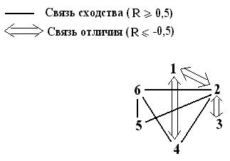 Рис. 1. Диаграмма связей сходства и отличия шахматных наборов. Наибольшее сходство современный
набор названий (6) проявляет по отношению к польскому набору (4), разговорный
набор названий (5) не имеет такой связи. Сходство звуковых форм современного и
польского наборов, вряд ли объясняет только общность славянских корней языков.
Скорее всего, обнаруженная связь опосредована историей распространения шахмат в
Европе, когда заимствовались не только комплекты шахмат с правилами игры, но и
собственно названия фигур, включая их звуковые отличия и выразительность. По результатам корреляционного
анализа есть основания полагать, что древнерусские
названия по своим звуковым формам родственны польским. Последние могли
повлиять на формирование разговорных и современных названий, причем на
современные, опять же, мог оказать воздействие польский набор названий, что
соответствует результатам выполненного в первой части брошюры исторического
анализа. В исторических фонетических формах русских шахматных названий,
вероятно, допустимо усматривать и западный путь их первоначального
проникновения на Русь. Фоносемантический генезис русских
названий Определение основных
характеристик исторических наборов русских названий шахматных фигур позволяет
на их примере проследить фоносемантическую тенденцию в русском языке. Данные
сведены в табл. 6. Утвердившийся в нормативной
языковой среде современный набор названий (6) обладает средней
частотной информативностью , превосходящей языковую норму, но
укладывающейся в область нормальной дисперсии. Параллельно существующий
разговорный набор (5), как и древнерусская реконструкция (2), ближе всего
примыкают к норме. Средневековый набор (3) имеет наибольшее значение ,
примыкающее к границе области нормальной дисперсии. Вместе с тем, именно современный
набор (6) характеризуется наименьшей индивидуальной мотивированностью названий М, сосуществующей с проявляемой им
наибольшей звукосмысловой согласованностью набора названий, то есть связью
названий фигур с их условной силой, выражаемой коэффициентом корреляции R. Отсюда следует, что именно звукосмысловые соответствия являются важным фактором для
оптимального существования набора в лексической среде. Происшедший за
последние столетия качественный скачок шахмат из простого развлечения в область
искусства, притягивающего интеллектуально развитых людей, не мог не наложить
дополнительные требования на соответствия содержания и формы используемых в
игре названий, на что тут же отреагировал русский язык - произошло движение в
сторону увеличения звукосмысловых соответствий в названиях фигур. Табл. 6. Основные характеристики русских наборов названий.
Разговорный набор (5) ближе к
норме по , что,
по-видимому, определяет его не менее успешное функционирование в среде
непрофессиональных любителей шахмат, как альтернативы официальному набору. Для
последних шахматы переведены в разряд заурядных развлекательных игр типа лото,
карт, кеглей или городков, в которых основным фактором, воспринимаемым
участниками игр, должна являться «понятность» названий, выражаемая их близостью
к норме. В этом смысле из-за слишком высокой средневековый
набор проигрывает всем остальным, что с очевидностью повлияло на его
модификацию: названия некоторых фигур оказались измененными, именно новые
варианты названий закрепила речевая практика. Из рассмотренной шахматной
лексики следует, что язык приближает лексико-семантические группы слов к
частотной норме двойственным образом. Во-первых, путем введения звуковых форм,
в которых более явно присутствует элемент звукосмысловых соответствий. Примером
тому историческая трансформация слабо мотивированных древнерусской
реконструкции и средневекового набора названий. Во-вторых, путем приближения
средней частотной информативности лексико-семантической группы слов к норме.
Результатом совместного действия указанных языковых механизмов является
некоторый компромиссный, возможно, не оптимальный вариант, отвечающий
интуитивным потребностям носителей языка в их речевой практике.
Заключение Несмотря на многоплановость
лексических значений слов, используемых в качестве названий шахматных фигур, по
результатам проведенного исторического и фоносемантического анализа (в
последнем случае в аспекте нормы современного языка) достаточно
привлекательными выглядят древнерусская
реконструкция и разговорный набор, которые, по большей части, используют
исторически мотивированные и семантически обоснованные названия. Реконструкция не задумывалась
авторами как оппозиция к устоявшемуся в спортивной шахматной среде современному
набору названий фигур, который сам по себе достаточно органичен. Речь не идет о
каких-либо отменах и переименованиях – в жизни за последнее десятилетие их было
достаточно. Нам представляется, что по результатам настоящего исследования
найдены причины и мотивы превращений, которые порой могут быть расценены
необоснованными. Редкие исследователи обращались к последовательному анализу.
Возможно, авторам удалось внести элемент ясности в осознание стихийности
генезиса русских названий шахматных фигур. Названия реконструкции могут
быть рекомендованы к альтернативному использованию для обозначения и нотации
шахматных фигур, в первую очередь, в новых шахматных играх, так как, по мнению
авторов, реконструкция превосходит современный набор по сопряжению с языковой
нормой. Обнаруженные
историко-лингвистические соответствия свидетельствуют в пользу единого
источника появления шахмат на Руси и в Польше: отсутствие звуковых связей русских и польского наборов шахматных названий с
персидским можно трактовать как одновременное первоначальное проникновение
шахмат в Россию и Польшу. Следует особо подчеркнуть, что с
целью упрощения многочисленных ссылок на названия шахматных фигур, относящихся
к разным историческим эпохам, И. Линдер приводил изображения археологических
находок с использованием современных русских шахматных терминов: король, ферзь,
ладья, слон, конь, пешка. Это может ввести в заблуждение. Например, иллюстрации
фигур из Афрасиаба (6-8 в.) в принципе не могли иметь таких названий. Это
совершенно другой тип фигур: раджа, фарзин, ратха, пил, асп, пийадэ. Изучая
превосходно выполненную И. Линдером таблицу "Типология древнерусских
шахмат по материалам археологических открытий", читатель, к сожалению,
вряд ли задумается о подлинных исторических названиях фигур, относящихся к
различным историческим эпохам и географическим регионам. Как и о том, что
изобразительные шахматы 11-13 веков, помещенные в 4-ом столбце указанной
таблицы, вовсе не относятся к одному и тому же шахматному набору, а собраны из
разных археологических раскопок. Часть изображенных там фигур могла иметь
другие названия, против чего не может возразить сам И. Линдер. Фигура короля,
найденная в Бресте, расположенном на границе с Польшей, вполне могла называться
королем, но только там, где ее нашли! Для остальных регионов России это вовсе
не было обязательным. Та же фигура в Киеве могла называться "цьсарь"
(по византийско-болгарской традиции), в другом месте - "кънязь", так
как ни о каком едином королевском или царском титуле от Бреста до Волги (в
эпоху древней Руси) не могло быть и речи. Что касается второй изображенной там
фигуры (ферзь из Лукомля), скорее всего, речь должна вестись об обратном
словообразовательном процессе на линии восток-запад. Давление восточного
термина «ферзь» было весьма сильным, но и процесс его осмысления продолжался не
одну сотню лет! Запад сразу же отверг этот термин после его первоначального
появления в Испании. Где проходила такая граница отказа на территории бывшего
СССР, до сих пор неизвестно: всевозможные нашествия с Востока на нашу
многострадальную родину шли волнами одно за другим вплоть до 15 века. Во всяком
случае, гипотетический белорусский ферзь
весьма сходен не с восточным фарзином, а со славянским воеводой. "Археологические
раскопки" в сфере языка могли бы пролить свет на многие лингвистические
загадки. Один из возможных способов проникновения в неизвестное предлагает
настоящая работа, важной стороной которой является попытка воссоздания
древнерусского набора названий шахматных фигур. Более того, предлагаемая реконструкция
по многим параметрам соответствует нормам современного русского языка. Отдельно
хотелось бы отметить, что не соответствующий современному русскому языку
звуковой (и логико-семантический) строй реконструированного русского
средневекового набора названий фигур позже был вытеснен более приемлемым
звуковым набором. Исследователям еще предстоит
уточнить, как именно шел процесс эволюции названий шахматных фигур от Бреста до
Белой Вежи и Мангазеи. Авторы исследования (при любых обстоятельствах) оставляют
за собой право утверждать, что не всегда следует восхищаться стихией языка:
словообразовательным процессом полезно (более того, можно и нужно) управлять,
чтобы избежать неоднократно встреченных в изложении нашего исследования
логико-лингвистических парадоксов, нарушающих строй русского языка, который, и
без того, в силу чрезмерных иноязычных заимствований изрядно деформирован.
Авторы – носители русского языка, но у них всегда возникает вопрос, почему
русский этнос столь сильно восприимчив и к восточной, и к западной культуре. Не грозит ли нам потеря своего языка и
национального облика? Приложение О
фоносемантике Фоносемантика представляет собой
сравнительно молодую науку, в законченном виде сформировавшуюся несколько
десятилетий назад и выросшую из обобщения результатов разнообразных
исследований аспекта звукоизобразительности в языке. Такие языковедческие
науки, как фонетика и семантика, исходя из принципа произвольности языкового
знака, оказались не в состоянии объяснить возросшее количество накопленных
лингвистикой фактов о семантичности звука. Многочисленные исследования
ономатопеи (звукоподражания) и звукосимволизма, включая психолингвистические
измерения, безусловно подвели к выводу о существовании изначальной связи между
звуковыми оболочками слов и их значениями в различных языках, включая русский.
Тем самым нашла окончательное подтверждение давно существовавшая в лингвистике
идея о содержательности звуковых форм, которые проявляют тенденцию в той или
иной мере соответствовать смыслу слов. Уже в Древней Индии существовала
уверенность в исконной связи названия и обозначаемого. Квинтэссенцию последнего
искали в фонетическом составе слова. В Древней Греции длительное время
продолжалась философская полемика относительно «имен», то есть названий, вещей,
отголоски которой докатились до наших дней, поскольку затронутый вопрос имеет
прямое отношение к проблеме звуковой изобразительности. Споры велись между приверженцами
концепции «тесей» (),
утверждавшими, что звуки слова участвуют в номинации произвольно и не связаны
со свойствами обозначаемой вещи, и приверженцами концепции «фюсей» (),
которые защищали отприродный аспект названий, основываясь на представлении о
существовании жесткой связи между звучанием и значением слова. Активно
вовлеченным в обсуждение оказался Платон, который отстаивал тезис о слове, как
отображении вещи, совсем не тождественном ей самой, но вмещающем в себя
некоторые ее особенности. На протяжении веков дискуссия
возникала снова и снова, привлекая великие умы: проблема звукосмысловых
соответствий интересовала Руссо, Декарта, Ломоносова, Гумбольдта и других.
Российские поэты-символисты Бальмонт и Белый пытались проникнуть в
первоначальную звуковую семантику слов, чтобы использовать полученные знания в
своем творчестве. Вместе с тем, отсутствие строгих лингвистических методик
порой приводило исследователей к противоречивым результатам, к абсолютизации
полученных на ограниченном материале выводов, которые, в первую очередь,
касались вопросов звукоподражания в языке. Позже круг лингвистических
исследований звукоизобразительности стал существенно шире, они затрагивали поэтику,
детскую речь, психологию восприятия. В настоящее время изучением
звукосмысловых соответствий, как в узком, так и в широком понимании, занимается
фоносемантика, системное и полное изложение теоретических и методологических
аспектов которой впервые выполнено С. В. Ворониным (см. 7). Целью фоносемантики
является изучение звукоизобразительности языка как необходимой, существенной,
повторяющейся и относительно устойчивой непроизвольно фонетически (примарно)
мотивированной связи между фонемами слова и полагаемым в основу номинации
признаком объекта-денотата. В узком понимании звукоизобразительностью наделены
те слова, которые воспринимаются фонетически мотивированными современными
носителями языка, в широком понимании – слова, примарно мотивированные по своему
происхождению, но в которых звукосмысловые соответствия ослаблены или полностью
утрачены в ходе эволюции языка. Место фоносемантики в
лингвистике находится на стыке фонетики, семантики и лексикологии, а в
психологии примыкает к психологии восприятия. Вместе с тем, фоносемантика
является самостоятельной наукой в силу уникальности объекта исследования, не
подпадающего под компетенцию ни одной из отдельно взятых перечисленных выше
наук. К ее основным принципам, согласно С. В. Воронину, относят принцип
мотивированности языкового знака (слова), принцип отражения, принцип
детерминизма, принцип системности, принцип целостности, принцип
многоплановости. Остановимся на них подробнее. Принцип мотивированности языкового знака. Этот принцип является основным в
фоносемантике. Он противостоит концепции произвольности (случайного характера)
номинации, допускающей независимость означающего от свойств обозначаемого
объекта-денотата. С общефилософской позиции принцип мотивированности отражает
целостность системы мира, в которой существует глубокая и всеобъемлющая
взаимосвязь объектов действительности. Однако из основополагающего
принципа фоносемантики вовсе не следует, что все слова языка можно расценивать
как мотивированные. Дело в том, что языковой знак обладает двумя сущностными
аспектами: он одновременно произволен и мотивирован, так как само слово, в
которое он включен, функционирует и в качестве средства отражения
действительности, и в качестве средства обмена информацией между людьми.
Последнее, являясь основной функцией языка, предполагает использование
конвенционального подхода к словообразованию, при котором введение новых слов в
речевую практику происходит на основе «договора» между ее участниками. Это
никак не связано с процессом примарной номинации, в котором один из признаков
денотата опосредованно закладывают в основу звуковой формы слова. Следует
полагать, что выбор конкретного признака происходит случайно, то есть в
достаточной мере произвольно, что вносит элемент изначальной произвольности в
акт примарной номинации, делая слова двоякими в своей сущности. Оба указанных
процесса в словообразовании подводят к выводу о реализации звукосмысловых
соответствий в языке как тенденции к мотивированности, которая не обязательно
должна носить ярко выраженный характер, с очевидностью осознаваемый всеми
участниками речевой практики. Принцип отражения. Классифицирует языковой знак,
слово, категорией отражения, утверждаемой материалистической гносеологией. В
языке содержанием отражения является значение слова (включая его смысл) как
сущность однородная с отображаемым понятием, а формой отражения служит
фонетическая оболочка, выступающая в роли внешнего по отношению к слову
выразителя его сущности. Отражение в языке неизбежно содержит искажения свойств
объекта в номинации, более того, при эволюции языка примарная мотивированность
многих слов может оказаться в значительной мере разрушенной. Слово и сам язык первоначально
возникли как примарно мотивированные. Развиваясь в этом качестве, на определенном
этапе развития они исчерпывают потенциал звукоизобразительности, что порождает
процесс денатурализации, сопровождаемый ослаблением примарной мотивированности.
На передний план словообразования выходят секундарные, то есть вторичные по
отношению к естественной, семантический и морфологический аспекты
мотивированности. Слово, первоначально возникшее в процессе отражения, речевая
практика адаптирует и приспосабливает для выполнения его основной функции –
функции коммуникативной. Отражательный характер изначального слова становится
безразличен его новой роли, слово приобретает черты произвольности, вместе с
тем в завуалированном виде сохраняя свою звукоизобразительность, выделить
которую в значении слова представляет непростую задачу для исследователя. Принцип детерминизма. Является манифестацией
существования связи между звуковой формой примарно мотивированного слова,
отражающей определенное свойство объекта-денотата, и его значением. Другими
словами, принцип материалистического детерминизма распространен на
звукосмысловые соответствия языка, звукоизобразительного по своей природе, что
подводит общефилософскую основу и утверждает объективное существование предмета
фоносемантики, ставя фоносемантические рассмотрения над рамками чистого
отрицания, апеллирующего к элементам произвольности языкового знака и
придающего им абсолютный характер. Принцип системности. Применение системного подхода
предполагает объективное рассмотрение явлений звукоизобразительности в
совокупности всего многообразия существующих внутри языка связей, что
гарантирует исключение субъективных предположений и догадок. Принцип целостности. Дополняет принцип системности,
исходя из того, что свойства системы как целого не сводятся к простой сумме
свойств ее элементов. Специфические связи между элементами всей языковой
системы не могут не влиять на свойства звукоизобразительности, рассматриваемой
как структурированная подсистема языка. Принцип многоплановости. Предполагает проведение
законченного фоносемантического описания как минимум на трех уровнях:
синтагматическом (отдельные звуки, группы звуков или их сочетаний, звуковые
формы слов), парадигматическом (звуковые формы групп или сочетаний слов,
предложений), иерархическом (вся многоуровневая система языка), а также рассмотрение
взаимодействия звукоизобразительной подсистемы с системой языка в целом.
Принцип многоплановости исходит из того, что любой текст, в том числе в
фонетическом представлении, являет собой структурированную систему
многоуровневого наполнения. В фоносемантических исследованиях
обозначились два основных направления, а именно, типологическое и психолингвистическое.
В рамках первого направления проводится сопоставительный анализ проявлений
звукоизобразительности в различных языках, исследуются общие свойства фонем и
фонемотипов для определения универсальных способов передачи ими звукосмысловых
соответствий. Психолингвистика занимается экспериментальным изучением
проявлений звукосимволизма. Выбор названия этого направления обусловлен тем,
что оно затрагивает психологию восприятия языковых форм носителями языка. В
звукобуквенной модели, используемой психолингвистикой, (звукобуква представляет собой стойкое обобщение, или образ,
комплекса признаков буквы и фонемы, присутствующий в сознании носителя языка)
достаточно подробно освещены как синтагматическая, так и парадигматическая
стороны звукового символизма русского языка. Психолингвистическое направление
фоносемантических исследований сформулировано в работах А. П. Журавлева, заложившего экспериментальные основы
изучения проявлений звукосимволизма в русском языке (см. 10). Разработанный
звукобуквенный подход позднее был распространен на выявление звукосимволизма в
других языках: немецком (см. 20), польском (см. 11), английском (см. 13). По результатам проведенных
исследований можно сделать заключение о неодинаковой степени проявления
звукосимволизма в различных языках, более того на примере английского языка
обнаружены отличия в его восприятии различными группами носителей языка, а
именно, британцами и американцами. Наличие рассогласования между графическим и
акустическим образами фонем в английском языке приводит к отсутствию
однозначного соответствия между словом написанным и словом произнесенным, что
не позволяет англо-говорящим сформировать в сознании комплекс признаков,
сопутствующих звукобукве. В отличие от английского, русский язык имеет
тенденцию поддерживать устойчивую буквенно-фонемную связь написанного и
прочитанного, утверждая в сознании носителей языка их почти полное соответствие,
что обосновывает адекватность использования звукобуквенной модели при
исследовании явлений звукосимволизма. Основой психолингвистики, как и
фоносемантики в целом, является тезис о примарной мотивированности языкового
знака, который предполагает наличие соответствия между значением слова и его
фонетической формой. В звукобуквенной модели ассоциации, вызванные отдельными
звукобуквами, их звуковой символикой, в конечном итоге переносятся на слово, их
содержащее. Иными словами, звукосимволизм восходит к фонетической структуре,
проявляя себя как некий образ, вызываемый у носителя языка всей уникальной
звуковой формой конкретного слова,
присущей ему одному. Лексическое значение слова можно
представить в виде наложения и взаимопроникновения нескольких его аспектов:
понятийного ядра (смысла), признаковой оболочки и оболочки фоносемантической. В
таком представлении ближе всего к ядру расположена признаковая область, как это
показано на рис. 1. Конкретные звукосимволические признаки, заполняющие
фоносемантическую оболочку, по существу составляют фонетическое
(фоносемантическое) значение слова. Результаты настоящего исследования,
изложенные ниже, показывают наличие у слов также непризнакового частотного
фоносемантического аспекта, а именно универсальной характеристики структурной
неординарности звуковой формы, на которую нанизываются аспекты конкретного
признакового звукосимволизма. Можно обоснованно утверждать, что
фоносемантическая оболочка имеет двойное наполнение: как частотное, которое
распространяется на все лексическое значение, так и признаковое, которое
обозначено на общей частотной составляющей вполне определенными мотивированными
звукосимволическими признаками, в большинстве случаев соответствующими
конкретному понятийному ядру. 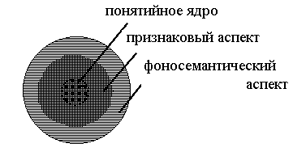 Рис. 1. Схема лексического значения слова. Заполняя всю фоносемантическую
оболочку, частотная составляющая формирует периферийную по отношению к ядру
часть лексического значения, как бы обволакивая его частотным аспектом. Наличие
этого частотного аспекта дает основания единообразно характеризовать и
сопоставлять свойства звуковых форм различных слов, не обращаясь напрямую к
признаковой наполненности их лексических значений, так как частотная
составляющая несет в себе обобщенную надпризнаковую фоносемантическую
характеристику звукового образа слова. Это, впрочем, не исключает наличия самых
общих связей семантики слова и его звучания в частотном срезе. Фонетическое значение не может
быть сознательно истолковано отдельным носителем языка. Поэтому его выявление
доступно либо, как это проделано в исследовании А. П. Журавлева, с
помощью целенаправленной регистрации реакций на звуковую форму, проявляемых
многими носителями языка, либо путем статистических обобщений языковых явлений,
связанных с фонетическим значением, что является основным методом
типологических изысканий, а также использовано в настоящем исследовании. Наибольшей психологической
реальностью на фонетическом уровне восприятия обладает звукобуквенный образ, который возникает из звуков речи, но
осознается и закрепляется при помощи соответствующей буквы. Материальным
представлением звукобуквы могут рассматриваться либо звук, либо буква, но
неизбежные неточности такого модельного описания будут присутствовать и в том,
и в другом случаях. Поскольку для грамотного человека, умеющего читать и
писать, звук и буква неразрывно связаны, звукобуквенная модель вполне адекватно
учитывает эту особенность организации языкового сознания, более того, к
настоящему времени она получила подтверждение по всей совокупности выполненных
исследований. Звукобуквенная модель использует
деление согласных на мягкие и твердые, соотнося с ними разные звукобуквенные
комплексы. Признак твердости-мягкости присутствует в речи у звукобукв «б», «в»,
«г», «д», «з», «к», «л», «м», «н», «п», «р», «с», «т», «ф», «х». Перечисленные
согласные «смягчаются», если после них в слове стоят «и», «е», «ё», «ю», «я»,
«ь», во всех остальных случаях они остаются твердыми. Другие согласные, как и
гласные, не меняют своего звучания в слове, всегда передаваясь одними и теми же
звукобуквенными комплексами. Мягкую согласную в звукобуквенной записи
обозначают буквой с апострофом за ней, а твердую – обычным образом. Всего в
русском языке насчитывается 46 звукобукв. Для гласных в звукобуквенной модели
дополнительно учитывают ударение, придающее ударным повышенную фонетическую
значимость в слове. По этой же причине отдельно рассматривают первые звукобуквы
слов. Поскольку звукосимволизм текста
выводится из звукосимволизма составляющих его звукобукв, это с неизбежностью
требует количественного измерения фоносемантических значимостей звукобукв. В
работах А. П. Журавлева подобные измерения были выполнены путем
опроса информантов по 25 полярным признаковым шкалам, образованным парами
антонимичных прилагательных, например, «хороший» - «плохой», «радостный» -
«печальный» и т.д. Каждая шкала была градуирована на пять делений числами от 1
до 5, чтобы крайние деления 1 и 5 обозначали максимальное проявление одного из
признаков, следующие 2 и 4 – начальную степень проявления, а центральное
деление 3 характеризовало отсутствие обоих полярных признаков у звукобуквы. В
результате опроса был получен набор оценок для 46 звукобукв русского языка. Все
оценки подвергнуты статистической обработке для установления средней
фоносемантической значимости отдельной звукобуквы. Определение области значимых
оценок было выполнено исходя из дисперсий распределений количественных ответов
опрошенных информантов. Корреляционный анализ
экспериментальных результатов по всем использованным шкалам позволил установить
их группировку вокруг признаков оценки, мягкости/силы и активности, построить
модель фоносемантического пространства восприятия звуков русского языка, а
также сформировать оптимальный набор из 7 шкал, достаточный для надежного
измерения символизма звукобукв. Исходя из символизма наиболее частотных в
конкретном тексте звукобукв, на примерах поэтических произведений проанализированы
аспекты функционирования звукосимволизма, например звуко-цветового. Наибольший интерес в работах
А. П. Журавлева представляет экспериментальное определение
фонетических значений (фоносемантической значимости) непроизводных слов
русского языка. Остановимся на этом вопросе подробнее. Если отдельные фонемы слова
наделены в восприятии символизмом, то им наделены и их сочетания, в том числе
слова. Однако неравноценность расположения звукобукв в слове придает первым и ударным особый психологический
вес, который был учтен в построенной звукобуквенной модели. В основу модели
определения фонетического значения слова положены частотности его звукобукв, то
есть усредненные частоты повторяемости их в речевом тексте, которые интуитивно
правильно представляют носители языка. Частотность отдельной звукобуквы связана
со значимостью ее образа: влияние малочастотных звукобукв слова оказывается
более сильным, а значит, они вносят больший вклад в окончательную символику
слова. В рассматриваемом исследовании средние частотности находили по
стилистически нейтральному тексту, в качестве которого выбрана обиходная речь.
Особо отмечено, что даже стилизованная разговорная речь героев литературных
произведений не может быть использована для вычисления средних частотностей,
так как является статистически непредставительной и дает неустойчивые в плане
надежности результаты. Основной сложностью в проведении
измерений фоносемантической значимости слов, существующих в речевой практике,
являлась невозможность применения методики шкалирования - носители языка не
осознают звуковую символику слова на фоне его четко выраженного лексического
значения, которое подавляет слабо обозначенный фоносемантический аспект.
А. П. Журавлеву удалось избежать этого естественного «затенения»
символики посредством конструирования «квазислов», специально составленных
звукобуквенных образований (звукокомплексов), ввиду отсутствия их в речевой
практике не наделенных смыслом, но в полной мере обладающих фоносемантической
значимостью. Измеренные значимости квазислов принимались за эталон, с которым
сопоставлялись результаты теоретической звукобуквенной модели, использованной
для расчета той же значимости, но на основе символики входящих в квазислово
звукобукв. Апробированная на адекватность
звукобуквенная модель для вычисления признаковой фоносемантической значимости F слова имела
вид: , где сумма вычисляется по всем звукобуквам слова, ki –
признаковая фоносемантическая значимость i – ой звукобуквы слова, веса Рi : для первых 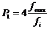 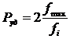 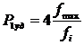 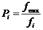 Сравнение расчетных значимостей
20 квазислов с измеренными значениями показало их близость, что явилось экспериментальным
обоснованием построенной модели. Вместе с тем, близость теоретических и
экспериментальных результатов оценивалась интуитивно, без применения каких бы
то ни было вычислительных критериев, вообще не рассматривалась задача
оптимальной параметризации модели (имеются ввиду множители 2 и 4 - параметры
используемой модели). Объяснением тому служит ссылка автора на более общую
задачу фоносемантического характера – доказать само существование
звукосмысловых соответствий в русском языке, что в полной мере оправдывает
процедуру построения упрощенной модели. Детальный анализ звукобуквенной
модели, проделанный при построении описанной ниже частотной модели, показывает,
что множители 2 и 4 перед обратными частотностями выбраны в определенной мере произвольно.
Более того, в модельном представлении они приводят не к увеличению
фоносемантических значимостей соответствующих звукобукв, а к уменьшению их
частотностей, что хорошо видно из коэффициентов 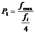 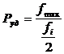 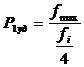 Указанный недостаток не
уменьшает важности работ А. П. Журавлева. Применение звукобуквенной
модели к большому фактическому материалу из непроизводных существительных
русского языка продемонстрировало тенденцию к соответствию звучания и значения,
заложенную в языке. В различных словах эта тенденция реализуется с разной
степенью очевидности, варьируясь от четкого соответствия фонетического и
лексического значений до явных противоречий. В этом проявляется диалектика
сосуществования формы и содержания языкового знака, влияющая на способ его
функционирования в речевой практике. Гармония содержания и формы повышает
эффективность функционирования, а внутренние противоречия вызывают процесс
секундарной номинации или изменения формы в сторону соответствия. Даже из приведенного выше
краткого обзора, в основном психолингвистического направления, можно сделать
вывод о неоспоримых достижениях фоносемантической науки. Несмотря на молодость,
фоносемантика наметила конкретные пути и способы исследований русского языка во
всем его многообразии. Появление новых идей и методик позволяет глубже
проникнуть в удивительную гармонию родного языка, понять принципы организации
его выразительных средств, уточнить представления о его природе и
происхождении. Частотные свойства поля
существительных Частотная модель структурной
неординарности звуковой формы слова разработана В. Н. Беловым с
учетом статистических свойств поля существительных. Исследовалась выборка существительных,
составленная на основе академического орфографического словаря русского языка
(см. 21), включающего в себя современную лексику, что позволило выполнить
анализ в широком понятийном диапазоне безотносительно к особенностям
профессиональной терминологии, в основном, не присутствующим в словарном
материале. Выбранные 43535 непроизводных слов, принадлежащие полю
существительных, содержали 378239 звукобукв. Принципиально важен следующий
аспект анализа. Фактически исследовались линейные цепочки звукобукв, отражающие
лишь их наличие в звуковой форме слова. Вместе с тем, это не совсем слова, так
на данном этапе анализа не учитывалась психологическая составляющая восприятия
звуковых форм, которая выделяет первые и ударные звукобуквы, наделяя их большей
значимостью в произнесенном и услышанном слове. Поэтому исследовались, скорее,
«зародыши», в большей степени отражающие звукобуквенный состав слов.
Психолингвистический аспект учтен при построении частотной модели структурной
неординарности слова.
Зарегистрированное распределение слов по звукобуквенным длинам приведено
на рис. 2. Подходя к свойствам распределения как к проявлению
комбинаторно-логической звукобуквенной структуры языка, свойства распределения
с большой мерой обоснованности можно проецировать на механизм словообразования
в языке, чтобы выявить его фонетический механизм. Внимания заслуживает следующий
факт. Количество слов убывает при увеличении или уменьшении их звукобуквенной
длины. Это свидетельствует о недостаточности или избыточности их фонетического
образа, регулирующего длительность существования слов в языковой среде, а
значит, норма находится где-то посередине. Языковая практика задает границы
нормы, но не накладывает абсолютного запрета на отклонения. Указанный механизм
имеет прямое отношение к саморегуляции
языка – ограничению тенденции произвольности в нем. Проведенный ниже анализ
средней частотной информативности слов разной длины показывает, что уменьшение
количества слов приходится на малые и большие значения частотной
информативности: языковая среда, по возможности, избегает крайностей. 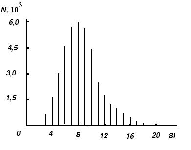 Рис. 2. Вид гистограммы распределения слов по звукобуквенным длинам. После проведения статистического
анализа распределения количества слов по их длине среднее <Sl> и
несмещенное среднеквадратичное отклонение s, задающее
оценку дисперсии s , оказались равными
<Sl> = 8,69 и s 2 @ s 2 = 8,80. Исходя из этого, с высокой степенью точности
можно считать установленным факт пуассоновой природы полученного распределения.
Из известных только распределение Пуассона характеризуется связью среднего и
дисперсии s 2 = <Sl>, полученной экспериментально.
Совпадение среднего и дисперсии с точностью до 1% делает ненужным дальнейшую
идентификацию типа полученного распределения, то есть вычисление и анализ его
более высоких моментов. Рассчитанное по Пуассону
количество слов для Sl = 1 (одной
звукобуквы) составляет 64, что соответствует количеству анализируемых звукобукв
равному 46. Однако в настоящей работе звукобуквы рассматривались не как слова,
а как бесструктурные производящие единицы языка. Рассмотрим этот аспект
фонетического пространства русского языка более подробно. Считая установленным пуассонов
характер существующего в языке распределения слов по их звукобуквенным длинам,
можно сделать важнейшее заключение о роли звукобукв в процессе формирования
слов. Статистически распределение Пуассона возникает в результате сложения
большого количества событий, характеризуемых равной вероятностью. В
рассматриваемой ситуации природа распределения Пуассона имеет отношение к
формированию слова и означает, что все звукобуквы в слове обладают равной
вероятностью быть использованными при его появлении. Следовательно, для
процесса словообразования звукобуквы (с учетом их частотностей) представляют
собой бесструктурные производящие единицы языка. Их случайные комбинации,
закрепленные в речевой практике, создают словарное наполнение языка. Данный
факт является краеугольным при построении частотной модели. Степень участия
конкретной звукобуквы в случайных комбинаторных продуктах, то есть словах,
будет учтена через ее частотность, определяющую психолингвистический фактор,
имеющий, как следует из рассмотрения, чисто частотное наполнение. Со статистической точки зрения,
при обобщении по времени, пространству и носителям языка, появление слова
предстает как случайный процесс, в котором речевая практика заимствует единицы
языка из океана звукобукв, в котором звукобуквы случайным образом перемешаны,
что не создает преимущества ни одной из них. Соотношение частотностей звукобукв - единственное, что определяет
структуру такого аллегорического океана. В этом смысле его можно сравнить с
океаном обычным, в котором естественные процессы поддерживают химический состав
морской воды, являющейся смесью. Аллегория передает статистический аспект
словотворчества, для которого все звукобуквы фонетически, но не количественно
(в смысле их распространенности в речевой практике), равноправны. Пока что обсуждалось
формирование слов-«зародышей» на этапе их первоначального появления в языке.
Однако речевая практика вносит в полученный лексический материал свои
коррективы. Из языка уходят артикуляционно сложные и неблагозвучные сочетания
звуков, равным образом затрагивая все слова-«зародыши». В результате коррекции
происходит приближение к языковой норме,
той лексике, которая составляет наполнение языка. Этот вторичный процесс с
равной вероятностью затрагивает все линейные цепочки звукобукв, так как
«неудобные» сочетания встречаются в них с равной вероятностью. А значит,
первоначально возникшее распределение не оказывается искаженным, оно испытывает
линейное преобразование масштаба по количеству слов, в результате чего остается
только общепринятая лексика. При невыполнении указанного механизма редукции
цепочек звукобукв к словам экспериментально зарегистрированное распределение
слов по звукобуквенным длинам не представляло бы собой распределения Пуассона. Средние частотности звукобукв. Средние частотности (без
выделения ударных гласных) приведены в табл. 1. Суммарная средняя частотность
гласных составляет 42,1%, согласных – 57,9%. Средние частотности представляют
собой достаточно высокий уровень обобщения – экспериментально зафиксированы
значительные вариации частотностей при изменении длины слов. Надо полагать, что в восприятии
вместо набора вариантных численных значений каждой звукобукве сопоставляется
некоторый усредненный частотный образ, построенный на опыте речевой практики
носителя языка. Хотя индивидуальный опыт может варьироваться, он не может не
отражать звукобуквенной структуры языка в целом. Табл. 1. Средние экспериментальные частотности звукобукв.
Первые звукобуквы слов. Частотности первых звукобукв
слов (без выделения ударных гласных), которыми могут быть как согласные, так и
гласные, приведены в третьем столбце табл. 1. Суммарная частотность первых
звукобукв составляет 11,5% и соответствует обратной средней звукобуквенной
длине слова (8,69 звукобукв), что понятно, так как на каждое слово приходится
одна ударная гласная. Соотношение частотности первой в
слове звукобуквы к ее средней частотности варьируется от 0 для «ы» до 167 для
«ё», заполняя весь промежуточный интервал значений. Надо полагать, что защитой
механизмов восприятия от перегрузки дополнительной информацией о вариациях
частотности звукобуквы, определяемых ее положением в слове, должен служить обобщенный
образ звукобуквы. Предположение об ориентации
восприятия первых звукобукв на норму получило экспериментальное обоснование. Им
служит найденное значение коэффициента корреляции средних значений частотностей
звукобукв и частотностей первых звукобукв (по данным табл. 1), которое
составляет 0,43. Такое значение коэффициента характеризует связь сходства,
который способствует переносу усредненного образа звукобуквы на менее частотную
первую. Этот вывод учтен при построении частотной модели. Табл. 2. Средние частотности гласных, ударных, первых и первых ударных гласных.
Ударные гласные. Разброс отношений средних
частотностей гласных к частотностям ударных гласных также достаточно велик: от
1 для «ё» до 13 для «э». В табл. 3 приведены результаты вычисления
коэффициентов взаимной корреляции средних частотностей гласных, ударных, первых
и первых ударных гласных. Сами частотности помещены в табл. 2. Увеличение количества признаков,
сопутствующих расположению и психологической роли гласной в слове, приводит к
уменьшению сходства выделенного набора с набором средних частотностей гласных.
Вместе с тем, существует очень высокая связь сходства частотностей ударных и
средних частотностей гласных в слове, характеризуемая коэффициентом корреляции
0,99. Наименее всего связаны между
собой признаки гласной быть ударной в слове (независимо от позиции) и первой
ударной. Этот вопрос заслуживает особого внимания, так в частотной модели,
согласно положениям психолингвистики, выделены первые, ударные и первые ударные
звукобуквы слова. Полная частотность всех первых гласных слова составляет
0,0199 (табл. 2), то есть одна первая гласная приходится на 50 звукобукв,
или в среднем на 6 слов. Полная частотность всех первых ударных гласных слова
составляет 0,00130, другими словами, такая гласная встречается один раз среди
769 звукобукв, или среди 89 слов. Столь малая частотность вызывает веское сомнение
в возможности ее индивидуальной фиксации в речевой практике. Если гласные и
согласные имеют в сумме близкие частотности и почти поровну встречаются в
звукобуквенном составе слова, на их фоне дополнительные признаки,
сопровождаемые малой долей вероятности, могут вообще не ощущаться. В этом
случае субъективно воспринимаемая мера средней частотности может и, скорее
всего, проецируется на другие признаки. Этот аспект восприятия учтен при
построении частотной модели. Табл. 3. Коэффициенты взаимной корреляции средних частотностей гласных (1), ударных (2), первых (3) и первых ударных (4) гласных.
В частотной модели ударные
гласные, особенно первые, вызывают основные затруднения при интерпретации. В
связи с этим на этапе анализа свойств поля существительных ударным гласным было
уделено особое внимание. Зарегистрированные статистические свойства ударных
позволяют с уверенностью переносить их характеристики на характеристики первых
ударных, так как ударные тяготеют к центру слова, что выводит первые ударные на
периферию восприятия. Распределение количества ударных
гласных по звукобуквенной длине слов с очевидностью отражает распределение
количества слов, так как в каждом слове
присутствует одна ударная гласная. В табл. 4 приведены средние положения
ударных в словах различной звукобуквенной длины. При увеличении длины слова
наблюдается сдвиг ударной от центра слова к его концу, это отражает два
фактора: ограниченность звукобуквенных длин слов и психолингвистический
преференционализм восприятия непервых ударных. Табл. 4. Средняя позиция ударной в слове заданной звукобуквенной длины.
Частотная
модель структурной неординарности Равновзвешенность (бесструктурность) звукобукв. Структурная неординарность
слова. Как было указано выше, несмотря
на фонетические различия слов поля существительных, состоящих из различных
комбинаций звукобукв, на статистическом уровне образования линейной
фонетической структуры они представляют бесструктурные цепочки звукобукв. Язык
оперирует ими так же, как звукобуквами. Пуассонова статистика распределения
слов по их звукобуквенным длинам фактически означает отсутствие в линейной
комбинации звукобукв какой-либо значимой информации, так как длины слов
сформированы по законам комбинаторики, производным от случайного стечения
обстоятельств. Но словотворчество нельзя
признать совсем произвольным, то есть случайным. В языке одни звуки
используются чаще и обладают большей частотностью, другие – меньшей. Учет этого
осуществляет субъективно воспринимаемая носителями языка средняя частотность
конкретной звукобуквы, которая задает относительное количество звукобукв,
используемых в квазислучайном, как вернее, процессе словотворчества. Все звукобуквы (с учетом их
частотностей), вошедшие в состав фонетической цепочки, обладают равной
вероятностью оказаться в слове на этапе его первоначального появления. Это
означает, что они представляют собой бесструктурные (в плане словообразования)
производящие единицы языка. Процесс фонетического конструирования нового слова
предстает как квазислучайный процесс, в котором единицы языка заимствуются из
однородно (с учетом частотности) перемешанного конгломерата звукобукв.
Звукобуквы равноценны, а значит, тождественны в сознании человека, в силу тех
или иных причин создающего новую фонетическую форму. Различия между звуками, или
практически соответствующими им в русском языке звукобуквами, на субъективном
несимволическом уровне проявляются только в сложности или простоте артикуляции
необходимой для их произнесения, что, впрочем, не ощущает усредненный носитель
языка. Другое – комбинация звукобукв. В результате ее прочтения появляется
полноценное слово, произнесенное и услышанное. Как только слово услышано, в
сознании или вербально, самим создателем слова или его реципиентом, включается
психолингвистический анализ звуковой формы с последующим отсевом артикуляционно
сложных (в плане произнесения последовательности звукобукв) и неблагозвучных
для восприятия носителя языка сочетаний звуков, который в одинаковой степени
затрагивает все новообразованные слова, приводя их в соответствие с нормой.
Определенную роль на этом этапе играют звукосимволизм и звукоподражание,
увеличивая шансы на отсев для слов, не наделенных звукоизобразительностью по
отношению к денотату. Следовательно, первоначально возникшее распределение по
длинам слов не искажается, но линейные цепочки звукобукв в равной мере
адаптируются к норме. Изначальная тождественность
звукобукв в плане структуры есть ни что иное как отсутствие структуры, бесструктурность, так как звукобуквы
являются элементарными единицами языка. Тогда бесструктурными должны оказаться
и случайно сформированные линейные комбинации звукобукв - с точки зрения теории
вероятностей, содержательные упорядоченные структуры не возникают там, где
царствует случай, а именно в случайной цепочке бесструктурных звукобукв,
используемых для конструирования слова. «Зародыши» возможных слов в виде
последовательности звукобукв, ввиду отсутствия связи смысла и формы те же
«квазислова» в определении А. П. Журавлева (10 - с. 120), тождественно
ординарны. Это заключение никак не связано
с содержанием процессов примарной или секундарной номинации объектов,
состояний, явлений - рассматривается ли первичный процесс номинации с поиском
подходящего «зародыша» звуковой формы для определенного признака денотата, или
процесс вторичный, когда уже существующее в речевой практике слово приобретает
новый смысл. Только что «выловленное» из океана звукобукв слово-«зародыш»
бесструктурно, вне зависимости от того, из какого количества, каких звукобукв и
их сочетаний оно состоит. Слово-«зародыш» становится (или
не становится) содержательным лишь тогда, когда оно прошло через фильтры
восприятия. Внутренняя декламация или вербализация слова порождают переход от
бесструктурности к субъективно воспринимаемой структуре или, если иметь ввиду
речевую практику, порой произвольно варьирующую ударение, множеству структур. А
поскольку есть структуры, появляется возможность количественно характеризовать
их, то есть оценить субъективно воспринимаемые структурные фонентические
отличия слов по отношению к их латентной фазе – цепочке звукобукв
слова-«зародыша». В качестве
соответствующей характеристики естественно использовать понятие
«структурной неординарности». При оценке структурной
неординарности звуковых форм функционирующих в языке слов, фаза формирования
которых завершилась, необходимо учитывать частотные характеристики звукобукв.
Для этого предназначена построенная ниже частотная модель, которая статистически
воспроизводит генерализованный психолингвистический механизм восприятия
частотной составляющей звуковой формы слова. Частотности звукобукв сложным образом зависят от звукобуквенной
длины слов, что в принципе не позволяет носителю языка учесть множественность
их нюансов, возникающих, в том числе, и по другим причинам. Однако, постоянно
пользуясь языком, носитель приобретает обобщенную информацию о частоте
использования звукобукв в речевой практике, в основном, ориентируясь на средние
частотности. При этом в сознании формируется функциональный, то есть
минимальный, образ звукобуквы, связанный с ее распространенностью. Этот образ
проецируется реципиентом на фонетические аспекты слов при их восприятии,
позволяя проводить сравнение на одном уровне обобщения. Частотная модель
основана на воссоздании подобного рода последовательных и равной степени
сложности обобщений (применительно к восприятию звуковых форм), связанных с
переносом (проецированием) более общих признаков на частные их проявления. Веса отдельных звукобукв. Ввиду бесструктурности все
звукобуквы (с учетом их частотностей) обладают тождественными комбинаторными
свойствами при формировании слов-«зародышей». Это подводит к выводу об их
равной структурной значимости в «зародыше», то есть равной структурной
неординарности, которую без каких-либо дополнительных нормировок можно положить
равной условной единице. Условной единицей должен тогда оцениваться и сам
«зародыш» слова, поскольку все «зародыши» в силу своей случайной природы тождественны
звукобуквам. Однако произнесенное слово уникально, при субъективном восприятии
и оценивании его звуковой формы у реципиента доминирует аспект соотнесения
звукобуквенного состава с нормой. Иначе и быть не может, так как
сформировавшаяся языковая среда дана носителю языка с момента рождения, поэтому
он подсознательно ориентируется на иерархию существующих форм. Чем же отличаются звукобуквы в
восприятии? Исключительно связанной с ними частотностью,
характеризующей распространенность. Психологическое воздействие звукобуквы тем
сильнее, чем реже она присутствует в сложившейся речевой практике. Этот факт
учтён в модели фонетического значения А.
П. Журавлева (10 - с. 121–123), этот же факт обнаружен Ю. Н. Тыняновым (см. 26) при рассмотрении сочетаемости
стихотворных рифмокомпонентов, установившим, что сила их взаимодействия
(индуцируемый у читателя поэтический образ) оказывается обратно
пропорциональной степени привычности (частоте) используемого автором
соотнесения их в тексте. Сходным образом, пропорционально обратной частотности,
формируются частотные образы звукобукв в линейной последовательности
слова-«зародыша»: чем чаще звукобуква встречается в речевой практике, тем менее
она значима в восприятии, тем менее ярким образом она наделена в сознании носителя
языка. А. П. Журавлев экспериментально
установил указанный порядок сложения фонетических (фоносемантических) значений
(значимостей) звукобукв при восприятии слова, который без каких-либо изменений
может быть использован для сложения других характеристик звукобукв. В случае
слова-«зародыша» происходит сложение характеристик структурной неординарности
звукобукв условно равных «1» для получения характеристики структурной
неординарности «зародыша», также равной «1». Применительно к слову-«зародышу» в
формулу А. П. Журавлева вместо признаковых фоносемантических значимостей
звукобукв необходимо подставить характеристики их структурной неординарности и
учесть отсутствие дополнительных психологических весов, что дает 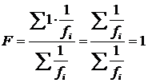 Здесь необходимо пояснить
важнейший аспект вычисления частотной информативности, который имеет смысл
универсалии русского языка. Для любых слов-«зародышей», лишенных дополнительных
психологических (статистических, как показано ниже) весов звукобукв,
справедливо равенство 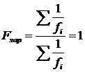 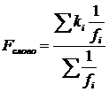 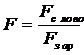 Поскольку формула для расчета
частотной информативности F функционирующего слова, востребованного речевой
практикой, имеет знаменатель вида 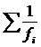 Дополнительные веса. Механизмы восприятия наделяют
первую и ударную дополнительными весами, что приводит к разрушению
бесструктурности линейной цепочки звукобукв слова. Аспект психологической
значимости в восприятии звуковой формы обоснован А. П. Журавлевым (10 - с.
121-123). Но возможна другая трактовка. Звукобуква слова имеет меньшую
вероятность оказаться первой или ударной, эти признаки менее частотны в слове,
что придает первой и ударной дополнительные статистические веса: чем меньше
частотность – тем выше вес по отношению к другим звукобуквам, не наделенным
данным признаком. Используя свойственный восприятию прямой перенос усредненных
признаков на выделенные, можно заключить: чем меньше вероятность обнаружить
конкретный признак звукобуквы внутри слова – тем выше статистический, а
следовательно, психологический вес звукобуквы по отношению к звукобуквенной
норме. Следовательно, дополнительные веса первой и ударной определены их
частотностями, оцениваемыми носителями языка из сложившейся речевой практики по
отношению к усредненным частотностям. Первые. Для первых звукобукв искомым признаком является их
местоположение. При средней длине слова 8,69 звукобукв для отдельно взятой
звукобуквы вероятность оказаться на первом месте составляет 1:8,69 = 0,115, а
значит, вес первой в обратное число раз больше, то есть 8,69. Коэффициент
корреляции средних частотностей и частотностей первых в слове звукобукв был
вычислен при анализе частотных свойств поля существительных и составляет 0,43.
Наличие корреляции по типу сходства поддерживает перенос средних частотных
характеристик звукобукв на первые. Ударные. Ударными являются исключительно гласные, количество
которых составляет 42,1% от всех звукобукв. Вероятность оказаться ударной в
слове имеет ту же величину, что и у первой, но по отношению ко всем звукобуквам
слова. Такого рода сравнение не адекватно, поскольку фонетически гласные
отличаются от согласных, составляя отдельную подсистему. Следовательно,
носитель языка может проводить сопоставимое сравнение только с гласными. По
отношению к гласным вероятность возрастает и составляет 0,115:0,421 = 0,273.
Значит, вес ударной в слове, находимый как обратная величина, равен 3,66.
Коэффициент корреляции экспериментально найденных средних частотностей гласных
и частотностей ударных гласных звукобукв имеет значение 0,99 и характеризует
практически полную связь между ними. Столь сильное сходство не просто
поддерживает, а определяет перенос средних частотных характеристик гласных на
характеристики ударных гласных. Первые ударные. Для первых ударных совпадение двух дополнительных
признаков, то есть положения на первом месте в слове и наличия ударения,
означает их совместную независимую реализацию с вероятностью 0,115×0,273 =
0,0314. Следовательно, вес первой ударной, как обратная величина, равен 31,8. В исследованной выборке первых
ударных звукобукв 0,13%, то есть из 378239 звукобукв выборки на их долю
приходится 492 звукобукы и столько же слов (всего в анализируемой выборке 43535
слов). Столь небольшое количество слов (на уровне 1,1%), начинающихся с первой
ударной, определяет их малую частотность в речевой практике, что не позволяет
носителю языка создать независимый обобщенный образ первой ударной. Такой образ
может дать только проецирование более частотных признаков. Поддерживает ли
фонетический строй языка перенос признаков? Ответ следует искать в связях
признакового сходства. Коэффициент корреляции средних частотностей гласных с
частотностями ударных, первых и первых ударных гласных составляет
соответственно 0,99, 0,73, 0,50. Коэффициент корреляции средних частотностей
первых гласных и первых ударных гласных равен 0,74, корреляция средних
частотностей ударных гласных и первых ударных характеризуется коэффициентом
0,46. Связи сходства, действительно,
существуют и четко фиксируются, они должны быть отражены в сознании носителя
языка. В частотной модели отражение указанного факта выполнено через
проецирование на свойства первых и ударных более частотных, генерализованных,
свойств звукобукв. Сравнение найденных
дополнительных весов с весами «4» и «2», использованными А. П. Журавлевым,
показывает, что они в среднем в два раза возросли, но практически не изменили
своего соотношения – вместо отношения 2,00 : 1 из построенной модели следует
2,37 : 1. Переход к средним частотностям
позволил уйти от существовавшей в модели А. П. Журавлева диспропорции
между дополнительными весами первых и ударных звукобукв, возникшей из-за
непоследовательного подхода к их оцениванию. А именно, вес «4» для первых был
отнесен к средним частотностям звукобукв, вес «2» для ударных - к средним
частотностям ударных, которые в сумме составляют 11,5% всех звукобукв слов, в то время как все
гласные составляют только 42,1%. Взвешивание фоносемантических хактеристик
звукобукв происходит по обратным частотностям, как следствие, вес первых
оказался заниженным, а ударных – завышенным. Частотная информативность. Изложенные аргументы позволяют
сконструировать выражение для расчета частотной информативности слова,
характеризующей его структурную неординарность, в виде 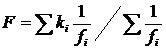 где сумма вычисляется по всем звукобуквам слова, веса: для первых k1 = 8,69, для
ударных kуд = 3,66, для
первых ударных k1уд = 31,8, все
остальные ki = 1, fi – средние частотности звукобукв. Если первая не является ударной: . Если первая является ударной
- вид выражения иной: . Преобразованная форма записи
показывает, что F принимает значения большие единицы и имеет смысл
превышения структурной неординарности слова над ординарным словом-«зародышем» с
характеристикой 1. Надобность в какой бы то ни было дополнительной нормировке
полученного выражения отпадает. Анализ выражений показывает, что увеличение
длины слова в среднем приводит к уменьшению F, уменьшение
– к росту F. Это же
демонстрируют результаты прямых расчетов по выборке существительных,
проиллюстрированные на рис. 3. Построенное выражение вместо
фоносемантических значимостей оперирует структурными весами звукобукв. Оно
выполняет статистическое «взвешивание» звукобукв слова по этой характеристике.
«Взвешиваются» касается количественных характеристик отдельных звукобукв,
стоящих перед слагаемыми в числителе выражения. Как известно, в
статистике существует процедура для вычисления общего среднего и его
погрешности. Взвешивание разноточных результатов, в которых погрешности
распределены по Гауссу или Пуассону, производится согласно приведенному
выражению (см., например 23?): 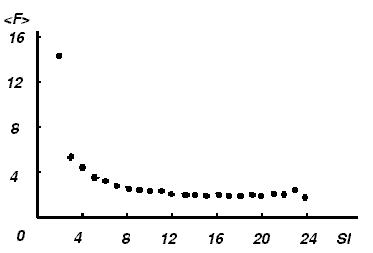 Рис. 3. Вид зависимости средней частотной информативности <F> от звукобуквенной длины слова Sl. 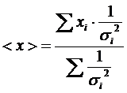 где <x> - средневзвешенный результат, xi -
независимые средние значения, полученные с дисперсиями si2 . Обратные
дисперсии - «веса», или точности xi, по которым
проводится «взвешивание». Что представляют xi и si в рассматриваемом случае? Поскольку взвешиваются характеристики звукобукв,
то xi = ki - параметры отдельных звукобукв в слове. Психолингвистическое взвешивание
характеристик звукобукв при их восприятии связывает значимость звукобуквы с
обратной дисперсией ее частотности. Дисперсии средних частотностей менее
частотных зукобукв меньше, восприятие отдает им предпочтение, создавая образы
большей выразительности. Более частотные звукобуквы образуют «фон», на котором
функционируют значимые фонетические формы. Норма поля существительных. На рис. 4 показано распределение
количества слов по частотной информативности (использована нормировка на 1 в
максимуме). Среднее распределения <F>, которое следует считать нормой
поля существительных, составляет 2,69, дисперсия, оценкой которой служит
квадрат среднеквадратичного отклонения sF2, равна 2,38.
Критерием вариаций нормы, определяемым статистикой, является область нормальной
дисперсии, задаваемая одним среднеквадратичным отклонением и занимающая
интервал значений от <F> - sF = 1,15 до <F> + sF = 4,23, в который попадает до 70% слов выборки. Если судить по соотношению
среднего (2,69) и дисперсии (2,38), то распределение достаточно близко к
распределению Пуассона, что отражает дискретную звукобуквенную природу
анализируемого материала. Естественная фоносемантическая шкала. Ось частотных информативностей F на рис. 4
можно рассматривать как линейную шкалу, ранжирующую слова языка по этой
характеристике. Поскольку расстановка объективна и задана звуковой формой слов,
в силу звукоизобразительности русского языка шкалу необходимо атрибутировать
как фоносемантическую. Экспериментальное обоснование сделанному утверждению
дает анализ звукосмысловых соответствий, существующих в русском языке.
Построенная фоносемантическая шкала не апеллирует к конкретным признакам,
присущим оценочным фоносемантическим шкалам, а значит, может быть атрибутирована
как естественная. Она отображает свойства звуковых форм слов в терминах их
структурной неординарности, соотнесенной с понятийными ядрами. Естественная шкала избегает
искусственного противопоставления полюсов-антонимов, обращаясь к оцениванию изначальной
звуковой формы слова, она не связана с антонимической системой противоречий, в
большинстве своем основанных на чисто субъективной природе восприятия.
Частотные оценки слов имеют иное содержание, основываясь не на близости образа
звуковой формы к полюсам, а на соотношении с языковой нормой. Модель однозначно
задает такую норму. 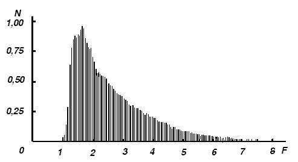 Рис. 4. Вид распределения относительного количества слов по частотной
информативности. Основываясь исключительно на
распределении слов по значениям их частотной информативности (рис. 4), можно
сделать ряд выводов. Превышение частотной информативностью слова правой границы
области нормальной дисперсии свидетельствует о его «неординарном» звучании.
Ситуация за левой границей соответствует «ординарности» образа слова, его
бесструктурности, отождествлению с единицей языка – звукобуквой. Описание фонетической (фоносемантической) мотивированности в частотной модели. После построения частотной
модели структурной неординарности слов и введения частотной информативности,
как ее количественной характеристики, появляется реальная возможность
количественного способа описания фонетической частотной мотивированности,
проявления общей тенденции к мотивированности русского языка. Не затрагивая количественное
обоснование, обратимся к качественной стороне вопроса. Выделим группу слов,
содержащих явно выраженный общий признак, то есть лексико-семантическую группу.
Очевидно, что мотивированность, то есть связь звуковых форм слов группы и их понятийных
ядер (допустим, что она существует), проявляет себя через отличие звуковых форм
друг от друга. Противное означало бы полную независимость звуковых форм от
смысла слов, то есть произвольность номинации. Отличия в структурной
неординарности слов могут быть зафиксированы через вариации их частотных
информативностей на среднем фоне частотной информативности всей группы. Он
представляет собой «информационный» шум, который, с одной стороны, значением
средней частотной информативности характеризует усредненную структурную
неординарность слов группы, с другой стороны, демпфирует, сглаживает, отличия
слов внутри группы, так как любое абсолютное отличие воспринимается тем в
меньшей степени, чем меньше его относительная величина по сравнению с фоном. Отклонение
от уровня среднего фона следует расценивать как проявление частотной
мотивированности, которая выражена тем сильнее, чем больше дисперсия частотных
информативностей звуковых форм группы. В качестве количественной оценки
частотной мотивированности естественно использовать отношение
среднеквадратичного отклонения частотной информативности слов группы к ее средней частотной информативности , именно это
отношение характеризует относительный размах (амплитуду) изменений на фоне
постоянной составляющей. Обозначим отношение как мотивировочный фактор М: . В случае высокой мотивированности группы можно ожидать,
что М по абсолютной величине окажется
близким к единице, характеризуя своим значением предельно допустимую дисперсию
звуковых форм в рамках набора.
Литература 1. Агапьев Б. Д., Белов В. Н., Кесаманлы Ф. П. и др. Обработка
экспериментальных данных. СПб, Нестор, 1999, 84 с. С. 64 - 66. 2. Алешковский М. Х. Повесть временных лет. М., Наука,
1971, 134 с. 3. Большой русско-польский словарь, в 2 т.
Москва-Варшава, Русский язык - Везда
Повшехна, 1986 - 1987. 4. Василенко И. А. Историческая грамматика русского
языка. М.,
Просвещение, 1965, 300 с. 5. Виноградов В. В. История слов. М., изд. РАН, 2000,
1138 с. 6. Военный энциклопедический словарь, в 2 т. М., БРЭ,
Рипол - классик, 2001. 7. Воронин С. В. Основы фоносемантики. Л., изд. ЛГУ,
1982, 244 с. 8. Гумилев Л. Н. От Руси до России. М., Рольф, 2001,
320 с. 9. Даль В. И. Толковый словарь. М., ГИХЛ, 1935, в 4 т. 10. Журавлев А. П. Фонетическое значение. Л., изд.
ЛГУ, 1974, 160 с. 11. Журавлева Т. С. Содержательность звуков речи в
межъязыковом аспекте. // Автореферат дис. канд. филол. наук. М., 1983, 20 с. 12. История войн и военного искусства. М., Воениздат,
1970, 560 с. 13. Кулешова О. Д. Фонетическая содержательность
звуков английского языка.// Фоносемантические
исследования. Пенза, 1990, 176 с. С. 120 - 127. 14. Линдер И. М. Шахматы на Руси. М., Наука, 1975, 208
с. 15. Линдер И. М. Мир шахматных фигур. М., АО ХГС,
1994, 288 с. 16. Ожегов С.И. Словарь русского языка. М., Русский
язык, 1978, 848 с. 17. Орбели И. А., Тревер К. В. Шатранг. Книга о
шахматах. Л., 1936, 196 с. 18. Орфографический словарь русского языка. / Под ред.
Бархударова С. Г.,
Протченко И. Ф., Скворцова Л. И. М., Русский язык, 1980, 400 с. 19. Персидско-русский словарь, в 2 т. М., Русский
язык, 1985. 20. Петрухин А. Ф. Содержательность звуковой формы
поэтического
произведения (на материале немецкой поэзии) // Автореферат дис.
канд. филол. наук. М., 1978, 26 с. 21. Русско-персидский словарь. М., Русский язык, 1986,
832 с. 22. Советский энциклопедический словарь. М., СЭ, 1980,
1560 с. 23. Словарь древнерусского языка АН СССР 11 - 14 вв.,
в 10 т. / Под ред.
Аванесова Р. И., М., Русский язык, 1988. 24.
Словарь рус. языка XI – XVII вв. М., Наука, 1975 – 1999 (буквы А – С). 25. Срезневский И. И. Словарь древнерусского языка, в
3 т. М., Книга, 1989. 26. Тынянов Ю. Н. Проблема стихотворного языка. М.,
Сов. писатель, 1965,
301 с. 27. Улуханов И. С. О языке Древней Руси. М., Наука,
1972, 135 с. 28. Шахматы. Энциклопедический словарь. М., СЭ, 1990,
622 с. 29. Якубинский Л. П. Ист. древнерусского языка. М., Учпедгиз, 1953, 36 с. |
|
||||||||||||||||||||||||||||||||||||||||||||||||||||||||||||||||||||||||||||||||||||||||||||||||||||||||||||||||||||||||||||||||||||||||||||||||||||||||||||||||||||||||||||||||||||||||||||||||||||||||||||||||||||||||||||||||||||||||||||||||||||||||||||||||||||||||||||||||||||||||||||||||||||||||||||||||||||||||||||||||||||||||||||||||||||||||||||||||||||||||||||||||||||||||||||||||||||||||||||||||||||||||||||||||||||||||||||||||||||||||||||||||||||||||||||||||||||||||||||||||||||||||||||||||||||||||||||||||||||||||||||||||||||||||||||||||||||||||||||||||||||||||||||||||||||||
|
|